Preface
Dear Students,
Welcome to the programming course in theoretical chemistry. This class builds on the bachelor lecture “Programming Course for Chemists” and assumes that you are already familiar with the basic principles of Python and the numerical algorithms explained there.
According to the current planning, the lecture will be held in the form of a practical course. This means that the lecturer will announce a topic and explain the theoretical background. Afterwards, you will have to study the topic in more detail yourself with the help of this lecture note and solve the problem set that is associated with the topic until a given deadline. During the time solving the problem set, the lecturer will be available for questions and help. We will then find a date when some of you will present their solutions to the class.
The topic announcement and the discussion will take place on
- Mondays 10:15–11:45 or
- Thursdays 12:15–13:45
in the seminar room 03.013 in building 42 (Theoretische Chemie), Campus Nord.
The first lecture will take place on Thursday, April 24, 2025.
You will be graded based on the quality of your solutions and your presentation. The final grade will be based on the average of all problem sets.
Syllabus
A preliminary syllabus is shown below. This can and will be continuously updated throughout the semester according to the progress of the lecture.
| Week | Weekday | Date | Type | Topic |
|---|---|---|---|---|
| 1 | Holiday | Easter Monday | ||
| 1 | Thur. | April 24 | Lecture | Fundamentals & Symbolic Computation |
| 2 | Mon. | April 28 | ||
| 2 | Holiday | Labour Day | ||
| 3 | Mon. | May 5 | Exercise 0 | |
| 3 | Thur. | May 8 | Lecture | Molecular Integrals I |
| 4 | Mon. | May 12 | ||
| 4 | Thur. | May 15 | ||
| 5 | Mon. | May 19 | ||
| 5 | Thur. | May 22 | Exercise | Exercise 1 |
| 6 | Mon. | May 26 | Lecture | Molecular Integrals II & Numerical Optimisation |
| 6 | Holiday | Ascension Day | ||
| 7 | Mon. | June 2 | ||
| 7 | Thur. | June 5 | ||
| 8 | Holiday | Whit Monday | ||
| 8 | Thur. | June 12 | Exercise | Exercise 2 |
| 9 | Mon. | June 16 | Lecture | Hartree-Fock and CIS |
| 9 | Holiday | Corpus Christi | ||
| 10 | Mon. | June 23 | ||
| 10 | Thur. | June 26 | ||
| 11 | Mon. | June 30 | ||
| 11 | Thur. | July 3 | Exercise | Exercise 3 |
| 12 | Mon. | July 7 | Lecture | Full CI |
| 12 | Thur. | July 10 | ||
| 13 | Mon. | July 14 | ||
| 13 | Thur. | July 17 | ||
| 14 | Mon. | July 21 | Exercise | Exercise 4 |
| 14 | Thur. | July 24 |
Motivation
Why should I learn programming as a chemist?
In the 21st century, programming is a skill that is becoming increasingly important. This is not only true for computer scientists, but also for chemists, physicists, biologists, and many other scientists. The knowledge of programming languages can help you to solve a wide range of problems more efficiently and automate repetitive tasks. In addition, programming languages can be used to visualise and analyse data, which is an important part of scientific work.
Why Python?
Python is one of the most widely used programming languages and is particularly beginner-friendly. The following figure shows the popularity of some programming languages according to the PopularitY of Programming Language (PYPL) Indexes (as of April 2025).
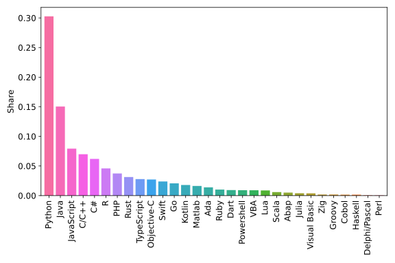 Popularity of programming languages. Taken from the PYPL Index.
One reason for that is that Python often requires significantly less code than compiled languages like Java or C/C++ to implement the same algorithms.
 Program length, measured in the number of non-commented lines of code (LOC).
Program length, measured in the number of non-commented lines of code (LOC).
Moreover, it is often possible to accomplish the same task with a scripting language, such as Python, in significantly less time than with a compiled language.
 Development time to accomplish a certain programming task, measured in hours.
Development time to accomplish a certain programming task, measured in hours.
On the other hand, some people argue that Python is a slow language. This is true to some extent. However, let us consider the following points:
Python is (also) an interpreted language
Python itself is a C program that first compiles the source code into so-called bytecode and then interprets and executes it. This is in contrast to compiled languages like C, C++, Rust, etc., where the source code is compiled into machine code. The compiler can perform many optimizations on the code, which leads to a shorter runtime.
Example
This behaviour can be shown with a simple example: A naive implementation that sums all odd numbers up to 100 million. This could look like this:
s = 0
for i in range(100_000_000):
if i % 2 == 1:
s += i
This code takes about 8 seconds on the author’s computer. Now, the same algorithm is implemented in a compiled language (in this case Rust) to show the influence of the compiler.
#![allow(unused)] fn main() { let mut s: usize = 0; for i in 0..100_000_000 { if i % 2 == 1 { s += i; } } }
This code actually has no runtime at all and is evaluated immediately.
The compiler is smart enough to understand that everything can be calculated at
compile time and simply replaces the value for the variable s. This now makes
clear that compiled languages can benefit from methods that interpreted languages
simply do not have due to their approach. However, we have already seen that
compiled languages usually require more lines of code and more work. Moreover,
there are usually many more concepts to learn in compiled languages.
Python can be very performant
During this course, we will often use Python libraries like NumPy or SciPy for mathematical algorithms, especially linear algebra. These packages bring two major advantages. On the one hand, they allow the very easy use of complicated algorithms and, on the other hand, these packages are written in compiled languages like C or Fortran. This way, we can benefit from the performance advantages without having to learn a potentially more complicated language.
Getting Started
Python Distribution
We highly recommend using the Miniforge distribution. If you already have installed the Anaconda distribution, you can also use it for this course. Follow the instructions below to install Miniforge. You should use a Python version of 3.10 or higher.
Installation
- Download the Miniforge installer according to your operating system here.
- Execute the installer:
- Unix-like platforms (Mac OS & Linux):
Open the terminal, navigate to your Downloads folder, and call
wherebash [Miniforge-Installer].sh[Miniforge-Installer]should be replaced by the name of the installer, e.g.Miniforge3-Linux-x86_64.shorMiniforge3-MacOSX-arm64.sh. - Windows: Double-click the installer on the file explorer.
- Unix-like platforms (Mac OS & Linux):
Open the terminal, navigate to your Downloads folder, and call
Python Packages
During the lecture, we will use several Python packages that can be
conveniently installed using the package manager mamba, which is
installed with the Miniforge distribution.
Some of the most important packages are listed in the table below.
Please install these packages by executing the following commands
in your terminal.
If you are using Windows, execute the commands in Miniforge Prompt that comes with your Miniforge installation.
| Package | Command |
|---|---|
| NumPy | mamba install numpy |
| Matplotlib | mamba install -c conda-forge matplotlib |
| SciPy | mamba install -c conda-forge scipy |
| SymPy | mamba install -c conda-forge sympy |
| Jupyter | mamba install jupyter |
Jupyter Notebook
If you are a beginner in Python, we recommend using Jupyter Notebook for writing and executing your Python code. It is a blockwise executable document that can contain code, text, and graphics. To test your Python installation and to make yourself familiar with Jupyter Notebook, please download and open the Juptyer Notebook that is provided in WueCampus by calling
jupyter notebook
in your terminal. This will open a new tab in your web browser where you can navigate to the folder where the Jupyter Notebook is located and open it. If your installation was successful, you should be able to execute all code cells in the notebook without any errors. You can find many more tutorials on the internet, e.g. here.
Recommendations for Further Integrated Development Environments (IDEs) or Editors
If you are already familiar with Python and want to use a more sophisticated development environment, you might want to use an IDE or a specialised editor. Although it is possible to write Python code using a conventional text editor, a good IDE can boost your programming experience greatly. Therefore, we shall show you some recommendations of IDEs and specialised editors here besides Jupyter Notebook.
-
- full-featured Python IDE with a focus on scientific development
- lightweight and easy to configure
-
- one of the most used editors despite its lightweight
- almost all features of an IDE although it is officially not one
-
- commercial (free for students) IDE with lots of functionalities
- most suitable for very large and complex Python projects
- possibly too cumbersome for small projects like the ones in this lecture
-
Vim/NeoVim
- command-line editor pre-installed on almost all Unix-like computers
- possibly very unwieldy at the beginning due to the many keyboard shortcuts and the lack of beginner-friendliness like a typical IDE or Jupyter Notebooks
- extremely configurable
- adaptable to a very extensive and comfortable editor with some effort
- still one of the most used editors
How to interact with this website
This section gives an introduction to how to interact with the lecture notes. These are organized into chapters. Each chapter is a separate page. Chapters are nested into a hierarchy of sub-chapters. Typically, each chapter will be organized into a series of headings to subdivide a chapter.
Navigation
There are several methods for navigating through the chapters of a book.
The sidebar on the left provides a list of all chapters. Clicking on any of the chapter titles will load that page.
The sidebar may not automatically appear if the window is too narrow, particularly on mobile displays. In that situation, the menu icon (three horizontal bars) at the top-left of the page can be pressed to open and close the sidebar.
The arrow buttons left and right to the page can be used to navigate to the previous or the next chapter.
The left and right arrow keys on the keyboard can be used to navigate to the previous or the next chapter.
Top menu bar
The menu bar at the top of the page provides some icons for interacting with the notes.
| Icon | Description |
|---|---|
| Opens and closes the chapter listing sidebar. | |
| Opens a picker to choose a different color theme. | |
| Opens a search bar for searching within the book. | |
| Instructs the web browser to print the set of notes. | |
| Opens the WueCampus course room for this lecture. |
Tapping the menu bar will scroll the page to the top.
Search
The lecture notes have a built-in search system.
Pressing the search icon () in the menu bar or pressing the S key on the keyboard will open an input box for entering search terms.
Typing any terms will show matching chapters and sections in real-time.
Clicking any of the results will jump to that section. The up and down arrow keys can be used to navigate the results, and enter will open the highlighted section.
After loading a search result, the matching search terms will be highlighted in the text.
Clicking a highlighted word or pressing the Esc key will remove the highlighting.
Code blocks
Code blocks contain a copy icon , that copies the code block into your local clipboard.
Here’s an example:
print("Hello, World!")
We will often use the assert statement in code listings to show you
the value of a variable. Since the code blocks in this document are not
interactive (you can not simply execute them in your browser), it is
not possible to print the value of the variable to the screen.
Therefore, we ensure for you that all code blocks in these lecture notes
run without errors and in this way, we can represent the value of a
variable through the use of assert.
The following code block for example shows that the variable a has
the value 2:
a = 2
assert a == 2
If the condition is evaluated as False, the assert statement would
raise an AssertionError.
Fundamentals
In the following sections, we will explain the concept of bitwise operators after laying the necessary foundations. Our goal is to show what bitwise operators do and what they can be used for. Afterwards, we also want to show the possibility and importance of unit tests. At the end of this chapter you should be able to answer the following questions:
- How are numbers represented in the computer?
- What is the difference in the representation between signed and unsigned integers?
- What are bitwise operators? Can you name and explain a few examples?
- What are unit tests? Why are they important?
Unsigned Binary Integers
When working with any kind of digital electronics, it is important to understand that numbers are represented by two levels in these devices, which stand for one or zero. The number system based on ones and zeroes is called the binary system (because there are only two possible digits). Before discussing the binary system, a review of the decimal system (ten possible digits) is helpful, because many of the concepts of the binary system will be easier to understand when introduced alongside their decimal counterparts.
Decimal System
As a human on earth, you should have some familiarity with the decimal system. For instance, to represent the positive integer one hundred and twenty-five as a decimal number, we can write (with the positive sign implied):
The subscript 10 denotes the number as a base 10 (decimal) number.
There are some important observations:
- To multiply a number by 10, you can simply shift it to the left by one digit, and fill in the rightmost digit with a 0 (moving the decimal place by one to the right).
- To divide a number by 10, you can simply shift it to the right by one digit (moving the decimal place by one to the left).
- To see how many digits a number has, you can simply take the logarithm (base 10) of the absolute value of the number, and add 1 to it. The integral part of the result will be the number of digits. For instance, \(\log_{10}(33) + 1 = 2.5.\)
Binary System (of positive integers)
Binary representations of positive integers can be understood in the same way as their decimal counterparts. For example
This can also be written as:
or
The subscript 2 denotes a binary number. Each digit in a binary number is called a bit. The number 1010110 is represented by 7 bits. Any number can be broken down this way by finding all of the powers of 2 that add up to the number in question (in this case , , , and ). You can see this is exactly analogous to the decimal deconstruction of the number 125 that we have done earlier. Likewise, we can make a similar set of observations:
- To multiply a number by 2, you can simply shift it to the left by one digit, and fill in the rightmost digit with a 0.
- To divide a number by 2, you can simply shift it to the right by one digit.
- To see how many digits a number has, you can simply take the logarithm (base 2) of the number, and add 1 to it. The integral part of the result is the number of digits. For instance, . The integral part of that is 7, so 7 digits are needed. With digits, unique numbers (from 0 to ) can be represented. If , 256 () numbers can be represented (0-255).

This counter shows how to count in binary from zero through thirty-one.
Binary System of Signed Integers
Since digital electronics only have access to two levels standing for 0 and 1, we will not be able to use a minus sign (\(-\)) for representing negative numbers. There are a few common ways to represent negative binary numbers by only using ones and zeros, which we will discuss in the following subsections.
Note: Unlike other programming languages, where different
types of integers exist (signed, unsigned, different number of bits),
Python only has one integer type (int). This is a signed
integer type with arbitrary precision. This means, the integer
does not have a fixed number of bits to represent the number, but will
dynamically use as many bits as needed to represent the
number. Therefore, integer overflows
cannot occur in Python.
This doesn’t hold for floats, which have a fixed size of 64 bits and
can overflow.
Sign and Magnitude
The most significant bit (MSB) determines if the number is positive (MSB is 0) or negative (MSB is 1). All the other bits are the so-called magnitude bits. This means that an 8-bit signed integer can represent all numbers from -127 to 127 ( to ). Except for the MSB, all positive and negative numbers share the same representation.
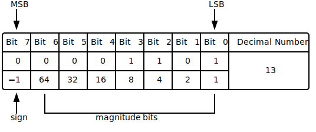
Visualization of the Sign and Magnitude representation of the decimal number +13.
In the case of a negative number, the only difference is that the first bit (the MSB) is inverted, as shown in the following Scheme.
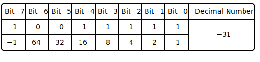
Visualization of the Sign and Magnitude representation of the decimal number -31
Although this representation seems very intimate and simple, several problems associated with the sign bit arise:
- There are two ways to represent zero,
0000 0000and1000 0000. - Addition and subtraction require different behaviours depending on the sign bit.
- Comparisons (e.g. greater, less, …) also require inspection of the sign bit.
This approach is directly comparable to the common way of showing a sign (placing a “+” or “−” next to the number’s magnitude). This kind of representation was only used in early binary computers and was replaced by representations that we will discuss in the following.
Ones’ Complement
To overcome the limitations of the Sign and Magnitude representation, another representation was developed with the following idea in mind: One wants to flip the sign of an integer by inverting all its bits.
This inversion is also known as taking the complement of the bits. The implication of this idea is, that the first bit, the MSB, also represents just the sign as in the Sign and Magnitude case. However, the decimal value of all other bits is now dependent on the MSB bit state. It might be easier to understand this behaviour by a simple example that outlines the motivation again.
We want our binary representation to behave like this:
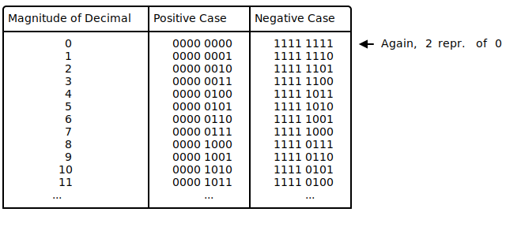
The advantage of this representation is that for adding two numbers, one can do a conventional binary addition, but it is then necessary to do an end-around carry: that is, add any resulting carry back into the resulting sum. To see why this is necessary, consider the following example showing the case of the following addition
or
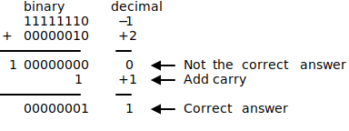
In the previous example, the first binary addition gives 00000000, which
is incorrect. The correct result (00000001) only appears when the carry
is added back in.
A remark on terminology: The system is referred to as ones’ complement because the negation of a positive value x (represented as the bitwise NOT of x, we will discuss the bitwise NOT in the following sections) can also be formed by subtracting x from the ones’ complement representation of zero that is a long sequence of ones (−0).
Two’s Complement
In the two’s complement representation, a negative number is represented by the bit pattern corresponding to the bitwise NOT (i.e. the “complement”) of the positive number plus one, i.e. to the ones’ complement plus one. It circumvents the problems of multiple representations of 0 and the need for the end-around carry of the ones’ complement representation.
This can also be thought of as the most significant bit representing the inverse of its value in an unsigned integer; in an 8-bit unsigned byte, the most significant bit represents the number 128, whereas in two’s complement, that bit would represent −128.
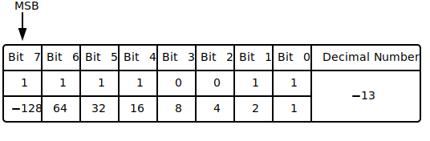
In two’s-complement, there is only one zero, represented as 00000000. Negating a number (whether negative or positive) is done by inverting all the bits and then adding one to that result.
The addition of a pair of two’s-complement integers is the same as the addition of a pair of unsigned numbers. The same is true for subtraction and even for the (N) lowest significant bits of a product (value of multiplication). For instance, a two’s-complement addition of 127 and −128 gives the same binary bit pattern as an unsigned addition of 127 and 128, as can be seen from the 8-bit two’s complement table.
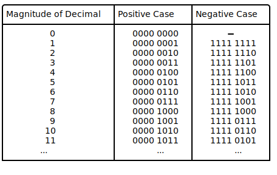
Logic Gates
Truth tables show the result of combining inputs using a given operator.
NOT Gate
The NOT gate, a logical inverter, has only one input. It reverses the logic state. If the input is 0, then the output is 1. If the input is 1, then the output is 0.
| INPUT | OUTPUT |
|---|---|
| 0 | 1 |
| 1 | 0 |
AND Gate
The AND gate acts in the same way as the logical “and” operator. The following truth table shows logic combinations for an AND gate. The output is 1 only when both inputs are 1, otherwise, the output is 0.
| A | B | Output |
|---|---|---|
| 0 | 0 | 0 |
| 0 | 1 | 0 |
| 1 | 0 | 0 |
| 1 | 1 | 1 |
OR Gate
The OR gate behaves after the fashion of the logical inclusive “or”. The output is 1 if either or both of the inputs are 1. Only if both inputs are 0, then the output is 0.
| A | B | Output |
|---|---|---|
| 0 | 0 | 0 |
| 0 | 1 | 1 |
| 1 | 0 | 1 |
| 1 | 1 | 1 |
NAND Gate
The NAND gate operates as an AND gate followed by a NOT gate. It acts in the manner of the logical operation “and” followed by negation. The output is 0 if both inputs are 1. Otherwise, the output is 1.
| A | B | Output |
|---|---|---|
| 0 | 0 | 1 |
| 0 | 1 | 1 |
| 1 | 0 | 1 |
| 1 | 1 | 0 |
NOR Gate
The NOR gate is a combination of OR gate followed by a NOT gate. Its output is 1 if both inputs are 0. Otherwise, the output is 0.
| A | B | Output |
|---|---|---|
| 0 | 0 | 1 |
| 0 | 1 | 0 |
| 1 | 0 | 0 |
| 1 | 1 | 0 |
XOR Gate
The XOR (exclusive-OR) gate acts in the same way as the logical “either/or.” The output is 1 if either, but not both, of the inputs are 1. The output is 0 if both inputs are 0 or if both inputs are 1. Another way of looking at this circuit is to observe that the output is 1 if the inputs are different, but 0 if the inputs are the same.
| A | B | Output |
|---|---|---|
| 0 | 0 | 0 |
| 0 | 1 | 1 |
| 1 | 0 | 1 |
| 1 | 1 | 0 |
XNOR Gate
The XNOR (exclusive-NOR) gate is a combination of XOR gate followed by a NOT gate. Its output is 1 if the inputs are the same, and 0 if the inputs are different.
| A | B | Output |
|---|---|---|
| 0 | 0 | 1 |
| 0 | 1 | 0 |
| 1 | 0 | 0 |
| 1 | 1 | 1 |
To see these gates in action, you can try the game Digital Logic Sim, which is explained in https://youtu.be/QZwneRb-zqA.
Bitwise Operators
Bitwise operators are used to manipulate the states of bits directly. In Python (>3.5), 6 bitwise operators are defined:
| Operator | Name | Example | Output (x=7, y=2) |
|---|---|---|---|
<< | left bitshift | x << y | 28 |
>> | right bitshift | x >> y | 1 |
& | bitwise and | x & y | 2 |
| | bitwise or | x | y | 7 |
~ | bitwise not | ~x | -8 |
^ | bitwise xor | x ^ y | 5 |
Left Bitshift
Returns x with the bits shifted to the left by y places (and new bits on the right-hand side are zeros). This is the same as multiplying \(x\) by \(2^y\).
The easiest way to visualize this operation is to consider a number that consists of only a single 1 in binary representation. If we now simply shift a 1 to the left three times in succession, we get the following:
assert (1 << 1) == 2 # ..0001 => ..0010
assert (2 << 1) == 4 # ..0010 => ..0100
assert (4 << 1) == 8 # ..0100 => ..1000
But we can also do this operation with just one call:
assert (1 << 3) == 8 # ..0001 => ..1000
Of course, we can also apply this operation to any other number:
assert (3 << 2) == 12 # ..0011 => ..1100
Right Bitshift
Returns x with the bits shifted to the right by y places. This is the same as dividing \(x\) by \(2^y\).
assert (8 >> 1) == 4 # ..1000 => ..0100
assert (4 >> 1) == 2 # ..0100 => ..0010
assert (2 >> 1) == 1 # ..0010 => ..0001
As we did with the bit shift to the left side, we can also shift a bit multiple times to the right:
assert (8 >> 3) == 1 # ..1000 => ..0001
Or apply the operator to any other number that is not a multiple of 2.
assert (11 >> 2) == 2 # ..1011 => ..0010
Bitwise AND
Does a “bitwise and”. Each bit of the output is 1 if the corresponding bit of \(x\) AND \(y\) is 1, otherwise, it is 0.
assert (1 & 2) == 0 # ..0001 & ..0010 => ..0000
assert (7 & 5) == 5 # ..0111 & ..0101 => ..0101
assert (12 & 3) == 0 # ..1100 & ..0011 => ..0000
Bitwise OR
Does a “bitwise or”. Each bit of the output is 0 if the corresponding bit of \(x\) OR \(y\) is 0, otherwise it’s 1.
assert (1 | 2) == 3 # ..0001 & ..0010 => ..0011
assert (7 | 5) == 7 # ..0111 & ..0101 => ..0111
assert (12 | 3) == 15 # ..1100 & ..0011 => ..1111
Bitwise NOT
Returns the complement of \(x\) - the number you get by switching each 1 for a 0 and each 0 for a 1. This is the same as \(-x - 1\).
assert ~0 == -1
assert ~1 == -2
assert ~2 == -3
assert ~3 == -4
Bitwise XOR
Does a “bitwise exclusive or”. Each bit of the output is the same as the corresponding bit in \(x\) if that bit in \(y\) is 0, and it is the complement of the bit in x if that bit in y is 1.
assert (1 ^ 2) == 3 # ..0001 & ..0010 => ..0011
assert (7 ^ 5) == 2 # ..0111 & ..0101 => ..0010
assert (12 ^ 3) == 15 # ..1100 & ..0011 => ..1111
Arithmetic Operators
Arithmetic operators are used to perform mathematical operations like addition, subtraction, multiplication, and division. In Python (>3.5), 7 arithmetic operators are defined:
| Operator | Name | Example | Output (x=7, y=2) |
|---|---|---|---|
+ | Addition | x + y | 9 |
- | Subtraction | x - y | 5 |
* | Multiplication | x * y | 14 |
/ | Division | x / y | 3.5 |
// | Floor division | x // y | 3 |
% | Modulus | x % y | 1 |
** | Exponentiation | x ** y | 49 |
Addition
The + (addition) operator yields the sum of its arguments.
The arguments must either both be numbers or both be sequences of the same type. Only in the former case, the numbers are converted to a common type, and an arithmetic addition is performed. In the latter case, the sequences are concatenated, e.g.
a = [1, 2, 3]
b = [4, 5, 6]
assert (a + b) == [1, 2, 3, 4, 5, 6]
Subtraction
The - (subtraction) operator yields the difference of its arguments.
The numeric arguments are first converted to a common type.
Note: In contrast to the addition, the subtraction operator cannot be applied to sequences.
Multiplication
The * (multiplication) operator yields the product of its arguments.
The arguments must both be numbers or alternatively, one argument must be an integer while the other must be a sequence.
In the former case, the numbers are converted to a common type and then multiplied together.
In the latter case, sequence repetition is performed; e.g.
a = [1, 2]
assert (3 * a) == [1, 2, 1, 2, 1, 2]
Note: a negative repetition factor yields an empty sequence; e.g.
a = 3 * [1, 2]
assert (-2 * a) == []
Division & Floor division
The / (division) and // (floor division) operators yield the
quotient of their arguments.
The numeric arguments are first converted to a common type.
Be aware that the division of integers yields a float,
while the floor division of integers results in an integer.
The result of the floor division operator is that of mathematical division
with the floor function applied to the result.
Division by zero raises a ZeroDivisionError exception.
Modulus
The % (modulo) operator yields the remainder from the division of the first argument by the second.
The numeric arguments are first converted to a common type.
A right-side argument of zero raises the ZeroDivisionError exception.
The arguments may even be floating point numbers, e.g.,
import math
assert math.isclose(3.14 % 0.7, 0.34)
assert math.isclose(3.14, 4*0.7 + 0.34)
The modulo operator always yields a result with the same sign as its second operand (or zero); the absolute value of the result is strictly smaller than the absolute value of the second operand.
Note: As you may have noticed in the listing above, we did not use the comparison operator
==to test the equality of two floats. Instead we imported themathpackage and used the built-in isclose function. If you want to learn more about float representation errors, you may find some useful information in this blog post.
Note: If you need both the quotient and the remainder, instead of performing a floor division followed by a modulus evaluation, you should use the built-in
divmodfunction.
Exponentiation
The ** (power) operator has the same semantics as the
built-in pow() function, when called with two arguments,
it yields the left argument raised to the power of the right argument.
Numeric arguments are first converted to a common type, the result
type is that of the arguments after coercion.
If the result is not expressible in that type,
(as in raising an integer to a negative power)
the result is expressed as a float (or complex).
In an unparenthesised sequence of power and unary operators, the operators are evaluated from right to left
(this does not constrain the evaluation order for the operands), e.g.
assert 2**2**3 == 2**(2**3) == 2**8 == 256
Implementation: Arithmetic Operators
All arithmetic operators can be implemented using bitwise operators. While addition and subtraction are implemented through hardware, the other operators are often realized via software. In this section, we shall implement multiplication and division for positive integers using addition, subtraction, and bitwise operators.
Implementation: Multiplication
The multiplication of integers may be thought of as repeated addition; that is, the multiplication of two numbers is equivalent to the following sum: Following this idea, we can implement a naïve multiplication:
def naive_mul(a, b):
r = 0
for i in range(0, a):
r += b
return r
Although we could be smart and reduce the number of loops by choosing the smaller one to be the multiplier, the number of additions always grows linearly with the size of the multiplier. Ignoring the effect of the multiplicand, this behavior is called linear scaling, which is often denoted as \(\mathcal{O}(n)\).
Can we do better?
We have learned that multiplication by powers of 2 can be easily realized by
the left shift operator <<. Since every integer can be written as a sum of
powers of 2, we may try to compute the necessary products of the multiplicand
with powers of 2 and sum them up. We shall do an example: 11 * 3.
assert (2**3 + 2**1 + 2**0) * 3 == 11 * 3
assert (2**3 * 3 + 2**1 * 3 + 2**0 *3) == 11 * 3
assert (3 << 3) + (3 << 1) + 3 == 11 * 3
To implement this idea, we can start from the multiplicand (b) and check the
least-significant-bit (LSB) of the multiplier (a). If the LSB is 1, this
power of 2 is present in a, and b will be added to the result. If
the LSB is 0, this power is
not present in a and nothing will be done. In order to check the second LSB of a
and perhaps add 2 * b, we can just right-shift a. In this way, the second LSB
will become the new LSB and b needs to be multiplied by 2 (left shift).
This algorithm is illustrated in the example above:
| Iteration | a | b | r | Action |
|---|---|---|---|---|
| 0 | 1011 | 000011 | 000000 | r += b, b <<= 1, a >>= 1 |
| 1 | 0101 | 000110 | 000011 | r += b, b <<= 1, a >>= 1 |
| 2 | 0010 | 001100 | 001001 | b <<= 1, a >>= 1 |
| 3 | 0001 | 011000 | 001001 | r += b, b <<= 1, a >>= 1 |
| 4 | 0000 | 110000 | 100001 | Only zeros in a. Stop. |
An example implementation is given in the following listing:
def mul(a, b):
r = 0
for _ in range(0, a.bit_length()):
if a & 1 != 0:
r += b
b <<= 1
a >>= 1
return r
This new algorithm should scale with the length of the binary representation of the multiplier, which grows logarithmically with its size. This is denoted as \(\mathcal{O}(\log n)\).
To show the difference between these two algorithms, we can write a function
to time their executions. The following example uses the function
perf_counter from the time module:
from random import randrange
from time import perf_counter
def time_multiplication(func, n, cycles=1):
total_time = 0.0
for i in range(0, cycles):
a = randrange(0, n)
b = randrange(0, n)
t_start = perf_counter()
func(a, b)
t_stop = perf_counter()
total_time += (t_stop - t_start)
return total_time / float(cycles)
The execution time per execution for different sizes is listed below:
n | naive_mul / μs | mul / μs |
|---|---|---|
10 | 0.48 | 0.80 |
100 | 2.83 | 1.56 |
1 000 | 28.83 | 1.88 |
10 000 | 224.33 | 2.02 |
100 000 | 2299.51 | 2.51 |
Although the naïve algorithm is faster for \(a,b \leq 10\), its time
consumption grows rapidly when a and b become larger. For even larger
numbers, it will quickly become unusable. The second algorithm, however,
scales resonably well to be applied for larger numbers.
Implementation: Division
Just like for multiplication, the integer (floor) division may be treated as repeated subtractions. The quotient \( \lfloor A/B \rfloor \) tells us how often \(B\) can be subtracted from \(A\) before it becomes negative.
The naïve floor division can thus be implemented as:
def naive_div(a, b):
r = -1
while a >= 0:
a -= b
r += 1
return r
Just like naïve multiplication, this division algorithm scales linearly with the size of the dividend, if the effect of the divisor is ignored.
Can we do better?
In the school, we have learned to do long divisions. This can also be done
using binary numbers. We at first left-align the divisor b with the
dividend a and compare the sizes of the overlapping part. If the divisor is
smaller, it goes once into the dividend. Therefore, the quotient at that bit
becomes 1 and the dividend is subtracted from the part of the divisor. Otherwise, this
quotient bit will be 0 and no subtraction takes place. Afterwards,
the dividend is right-shifted and the whole process is repeated.
This algorithm is illustrated in the following table for example 11 // 2`:
| Iteration | a | b | r | Action |
|---|---|---|---|---|
| preparation | 1011 | 0010 | 0000 | b <<= 2 |
| 0 | 1011 | 1000 | 0000 | a -= b, r.2 = 1, b >>= 1 |
| 1 | 0011 | 0100 | 0100 | b >>= 1 |
| 2 | 0011 | 0010 | 0100 | a -= b, r.0 = 1, b >>= 1 |
| 3 | 0001 | 0001 | 0101 | Value of b smaller than initial. Stop. |
An example implementation is given in the following listing:
def div(a, b):
n = a.bit_length()
tmp = b << n
r = 0
for _ in range(0, n + 1):
r <<= 1
if tmp <= a:
a -= tmp
r += 1
tmp >>= 1
return r
In this implementation, rather than setting the result bitwise like described
in the table above, it is initialized to 0 and appended with 0 or 1.
Also, the divisor is shifted by the bit-length of a instead of the difference
between a and b. This may increase the number of loops but prevents
negative shifts when the bit-length of a is smaller than that of b.
This algorithm is linear in the bit-length of the dividend and thus a \(\mathcal{O}(\log n)\) algorithm. Again, we want to quantify the performance of both algorithms by timing them.
Since the size of the divisor does not have a simple relation with the
execution time, we shall fix its size. Here we choose nb = 10. An example
function for timing is shown in the following listing:
from random import randrange
from time import perf_counter
def time_division(func, na, nb, cycles=1):
total_time = 0.0
for i in range(0, cycles):
a = randrange(0, na)
b = randrange(1, nb)
t_start = perf_counter()
func(a, b)
t_stop = perf_counter()
total_time += (t_stop - t_start)
return total_time / float(cycles)
Because we cannot divide by zero, the second argument, the divisor in this case, is chosen between 1 and n instead of 0 and n.
The execution time per execution for different sizes is listed below:
na | naive_div / μs | div / μs |
|---|---|---|
10 | 0.38 | 1.06 |
100 | 1.54 | 1.67 |
1 000 | 13.79 | 1.83 |
10 000 | 117.20 | 1.89 |
100 000 | 1085.89 | 2.24 |
Again, although the naïve method is faster for smaller numbers, its scaling prevents it from being used for larger numbers.
Edge Cases
Division by zero
Since division by zero is not defined, we should handle the case when the
user calls the division function with 0 as a divisor. While our naïve
division algorithm would be stuck in the while loop if 0 is
passed as the second argument and thus blocks further commands from being
executed, the other algorithm would deliver us with a number
(which is obviously wrong) without further notice. Neither
of these behaviours is wanted.
In general, there are two ways to deal with “forbidden” values. The first
one is to raise an error, just like the built-in division operators, which
raises a ZeroDivisionError and halts the program. This is realized by adding
an if-condition at the beginning of the algorithm:
def div_err(a, b):
if b == 0:
raise ZeroDivisionError
...
Sometimes, however, we want the program to continue even after encountering
forbidden values. In this case, we can make the algorithm return something,
which is recognizable as invalid. This way, the user can be informed about
forbidden values through the outputs. One possible choice of such an invalid
object is the None object which can be used like
def div_none(a, b):
if b == 0:
return None
...
Negative input
While implementing multiplication and division algorithms, we only used non-negative integers as examples to analyze the problems. Inputs of negative integers may therefore lead to undefined behaviors. Again, we can raise an exception when this happens or utilise an invalid object. The following listings show both cases on the multiplication algorithm:
def mul_err(a, b):
if a < 0 or b < 0:
raise ValueError
...
def mul_none(a, b):
if a < 0 or b < 0:
return None
...
These lines can be directly added to division algorithms to deal with negative inputs.
Floating-point input
Just like in the case of negative input values, floating-point numbers as
inputs may also lead to undefined behaviours. Although the same input guards
can be applied to deal with floating-point numbers, a more sensible way would
be to convert the input values to integers using int function before
executing the algorithms.
Unit Tests
Everybody makes mistakes. Although the computer that executes programmes does exactly what it is told to, we can make mistakes that may cause unexpected behaviours. Therefore, proper testing is mandatory for any serious application. “But I can just try some semi-randomly picked inputs after writing a function and see if I get the expected output, so …”
Why bother with writing tests?
First of all, if you share your program with other people, you have to persuade them that your program works properly. It is far more convincing if you have written tests, which they can run for themselves and see that nothing is out of order than just tell them that you have tested some hand-picked examples.
Furthermore, functions are often rewritten multiple times to improve their performance. Since you want to ensure that the function still works properly after even the slightest modification, you will have to run your manual tests over and over again. The problem only gets worse for larger projects. Nested conditions, interdependent modules, and multiple inheritance, just to name a few, will make manual testing a horrible choice; even the tiniest change could make you re-test every routine you have written.
So, to make your (and other’s) life easier, just write tests.
What are unit tests?
Unit tests are typically automated tests to ensure that a part of a program (known as a “unit”) behaves as intended. A unit could be an entire module, but it is more commonly an individual function or an interface, such as a class.
Since unit tests focus on a specific part of the program, it is very good at isolating individual parts and finding errors in them. This can accelerate the debugging process because only the code of units corresponding to failed tests has to be inspected. Exactly due to this isolating action, however, unit tests cannot be used to evaluate every execution path in any but the most trivial programs and will not catch every error. Nevertheless, unit tests are really powerful and can greatly reduce the number of errors.
Example-Based Tests
Since we want to discover errors using unit tests, let us assume that we did not discuss anything about the edge cases for multiplication and division routines we have written.
Although Python has the built-in module unittest, another framework for
unit tests, pytest, exists,
which is easier to use and offers more functionalities. Therefore, we will
stick to pytest in this class. The thoughts presented, however,
can be used with any testing framework.
We start by installing pytest with
mamba install pytest
When using jupyter-notebook, the module ipytest
could be very handy. This can be installed with
mamba install ipytest
Suppose we have written the mul function in the file multiplication.py and
the div function in the file division.py, we can create the file
test_mul_div_expl.py in the same directory and import both functions as:
from multiplication import mul
from division import div
Unit test with examples
We choose one example for each function and write
def test_mul_example():
assert mul(3, 8) == 24
def test_div_example():
assert div(17, 3) == 5
where we call each function on the selected example and compare the output with the expected outcome.
After saving and exiting the document, we can execute
pytest
in the console. pytest will then find every .py file in the directory
which begins with test execute every function inside, which begins with
test. If we only want to execute test functions from one specific file,
say, test_mul_div_expl.py. we should call
pytest test_mul_div_expl.py
If any assert statement throws an exception, pytest will inform
us about it. In this case, we should see
================================ 2 passed in 0.10s ================================although the time may differ. It is good to see that the tests passed. But
just because something works on one example does not mean it will always work.
One way to be more confident is to go through more examples. Instead of
writing the same function for all examples, we can use the function decorator
@parametrize provided by pytest.
Unit test with parametrized examples
We can use the function decorator by importing pytest and write
import pytest
@pytest.mark.parametrize(
'a, b, expected',
[(3, 8, 24), (7, 4, 28), (14, 11, 154), (8, 53, 424)],
)
def test_mul_param_example(a, b, expected):
assert mul(a, b) == expected
@pytest.mark.parametrize(
'a, b, expected',
[(17, 3, 5), (21, 7, 3), (31, 2, 15), (6, 12, 0)],
)
def test_div_param_example(a, b, expected):
assert div(a, b) == expected
The decorator @parametrize feeds the test function with values and makes
testing with multiple examples easy. It will become tedious, however, if
we want to try even more examples.
Unit test with random examples
By going through a large amount of randomly generated examples, we may
uncover rarely occurring errors. This method is not always available, since
you must get your hands on expected outputs for every possible input.
In this case, however, we can just use Python’s built-in *`` and //` operator to verify our own function.
The following listing shows tests for 50 examples:
from random import randrange
N = 50
def test_mul_random_example():
for _ in range(0, N):
a = randrange(1_000)
b = randrange(1_000)
assert mul(a, b) == a * b
def test_div_random_example():
for _ in range(0, N):
a = randrange(1_000)
b = randrange(1_000)
assert div(a, b) == a // b
Running pytest should probably give us 2 passes. To be more confident, we
can increase the number of loops to, say, 700. Now, calling pytest several
times, we might get something like
========================================= short test summary info ==========================================
FAILED test_mul_div.py::test_div_random_example - ZeroDivisionError: integer division or modulo by zero
======================================= 1 failed, 1 passed in 0.20s =======================================
This tells us that the ZeroDivisonError exception occurred while running
test_div_random_example function. Some more information can be seen above
the summary, and it should look like
def test_div_random_example():
for _ in range(0, N):
a = randrange(1_000)
b = randrange(1_000)
> assert div(a, b) == a // b
E ZeroDivisionError: integer division or modulo by zero
The arrow in the second last line shows the code where the exception occurred.
In this case, we have provided the floor division operator // with a zero
on the right side. We thus know that we should properly handle this case, both
for our implementation and testing.
We have found the error without knowing the detailed implementation of the functions. This is desired since human tends to overlook things when analyzing code and some special cases might not be covered by testing with just a few examples. Although with 700 loops, the test passes about 50 % of the time. If we increase the number of loops to several thousand or even higher, the test is almost guaranteed to fail and can inform us about deficits in our implementations.
The existence of a reference method is not only possible in our toy example
but also occurs in realistic cases. A common case is an intuitive, easy, and
less error-prone-to-implement method, which has a long runtime. A more
complicated implementation that runs faster can then be tested against this
reference method. In our case, we could use naive_mul and naive_div as
reference methods for mul and div, respectively.
But what if we really do not have a reference method to produce a large amount of expected outputs? The so-called property-based testing could help us in this case.
Property-Based Tests
Instead of comparing produced with expected outputs, we could use properties
that the function must satisfy as testing criteria.
Let us consider a function cat which takes two str as input and outputs
the concatenation of them. Using example-based tests, we would feed the
function with different strings and compare the outputs, i.e.
@pytest.mark.parametrize('a, b, expected', [('Hello', 'World', 'HelloWorld')])
def test_cat_example(a, b, expected):
assert cat(a, b) == expected
With property-based tests, however, we can use the property that the concatenated string must contain and only contain both inputs in the given order and nothing else. This yields the following listing:
@pytest.mark.parametrize('a, b', [('Hello', 'World')])
def test_cat_property(a, b):
out = cat(a, b)
assert a == out[:len(a)]
assert b == out[len(a):]
Although we used an example here, no expected output is needed. So in
principle, we could use randomly generated strings. Because property-based
tests are designed to test a large number of inputs, smart ways of choosing
inputs and finding errors have been developed. All of these are implemented
in the module Hypothesis.
This can be installed by running
mamba install -c conda-forge hypothesis
The package Hypothesis contains two key components. The first one is called
strategies. This module contains a range of functions that return a search
strategy, an object with methods that describe how to generate and simplify
certain kinds of values. The second one is the @given decorator, which takes
a test function and turns it into a parametrized one, which, when called, will
run the test function over a wide range of matching data from the selected
strategy.
Test the mul function
For multiplication, we could use the property that the product must divide both inputs, i.e.
assert r % a == 0
assert r % b == 0
But since we have a reference method, we can combine the best of two worlds: intuitive output comparison from example-based testing and** smart algorithms as well as lots of inputs from property-based testing. The test function can thus be written like
@given(st.integers(), st.integers())
def test_mul_property(a, b):
assert mul(a, b) == a * b
Since this test is very similar to the test with randomly generated
examples, we expect it to pass too. Calling pytest, the test failed,
however. Hypothesis gives us the following output:
Falsifying example: test_mul_property(
a=-1, b=1,
)
Of course! We did not have negative numbers in mind while implementing this
algorithm! But why did we not discover this problem with our last test?
In order to generate random inputs, we have used the function randrange,
which does not include negative numbers as possible outputs. This fact is
easily overlooked. By using predefined, well-thought strategies,
we can minimize human errors while designing tests.
After writing this problem down to fix it later, we can continue testing
by excluding negative numbers. This can be achieved by using min_value
argument of integer():
@given(st.integers(min_value=0), st.integers(min_value=0))
def test_mul_property_non_neg(a, b):
assert mul(a, b) == a * b
Using only non-negative integers, the test passes.
Test the div function
We can now test the div function by writing
@given(st.integers(), st.integers())
def test_div_property(a, b):
assert div(a, b) == a // b
This time, Hypothesis tells us
E hypothesis.errors.MultipleFailures: Hypothesis found 2 distinct failures.with
Falsifying example: test_div_property(
a=0, b=-1,
)
Falsifying example: test_div_property(
a=0, b=0,
)
From this, we can exclude negative dividends and non-positive divisors by writing
@given(st.integers(min_value=0), st.integers(min_value=1))
def test_div_property_no_zero(a, b):
assert div(a, b) == a // b
After this modification, the test passes. Hypothesis provides a large amount
of strategies
and adaptations,
with which very flexible tests can be created.
One might notice that the counterexamples raised by Hypothesis are all very
“simple”. This is no coincidence but deliberately made. This process is called
shrinking
and is designed to produce the most human-readable counterexample.
To see this point, we shall implement a bad multiplication routine, which
breaks for a > 10 and b > 20:
def bad_mul(a, b):
if a > 10 and b > 20:
return 0
else:
return a * b
We then test this bad multiplication with
@given(st.integers(), st.integers())
def test_bad_mul(a, b):
assert bad_mul(a, b) == a * b
Hypotheses reports
Falsifying example: test_bad_mul(
a=11, b=21,
)
which are the smallest example that breaks equality.
Symbolic Computation
You may also know computer algorithms as numerical algorithms since the computer uses finite-precision floating-point numbers to approximate the result. Although the numerical result can be arbitrarily precise by using arbitrary-precision arithmetic, it is still an approximation.
As humans, we use symbols to carry out computations analytically. This can also be realized on computers using symbolic computation. There are many so-called computer algebra systems (CAS) out there and you might already be familiar with one from school if you have used a graphing calculator there like the ones shown below.
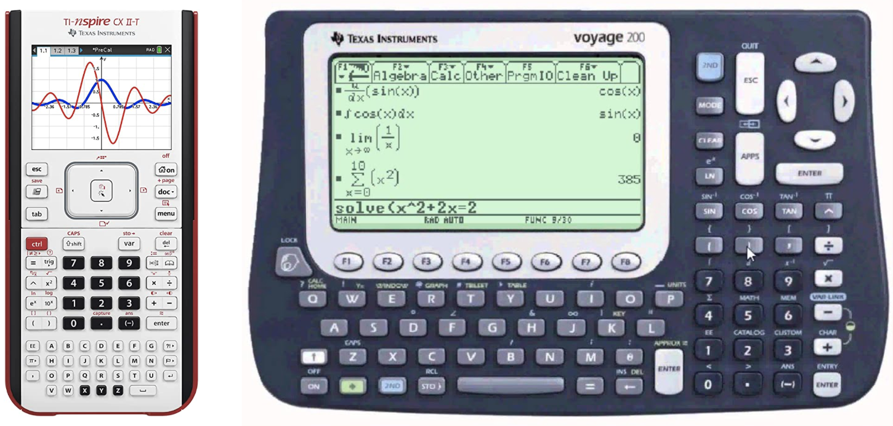
But of course, CAS is not limited to external devices but is also available as software for normal computers. The most commonly used computer algebra systems are Mathematica and SageMath/SymPy. We will use SymPy in this course because it is open-source and a Python library compared to Mathematica. SageMath is based on Sympy and offers several additional functionalities, which we do not need in this class.
To illustrate the difference between numerical and symbolic computations,
we compare the output of the square root functions from numpy and sympy.
The code
import numpy as np
print(np.sqrt(8))
produces 2.8284271247461903 as output, which is an approximation to the
true value of , while
import sympy as sp
print(sp.sqrt(8))
produces 2*sqrt(2), which is exact.
Basic Operations
We strongly advise you to try out the following small code examples yourself,
preferably in a Jupyter notebook. There you can easily see the value of the
variables and the equations can be rendered as latex.
Just write the SymPy variable at the end of Jupyter cell without calling
the print function explicitly.
Defining Variables
Before solving any problem, we start defining our symbolic variables.
SymPy provides the constructor sp.Symbol() for this:
x = sp.Symbol('x')
This defines the Python variable x as a SymPy Symbol with the representation
‘x’. If you print the variable in a Jupyter cell, you should see a rendered
symbol like: \( x \).
Since it might be annoying to define a lot of variables, SymPy provides another
function that can initialize an arbitrary number of symbols.
x, y, t, omega = sp.symbols('x y t omega')
which is just a shorthand for
x, y, t, omega = [sp.Symbol(n) for n in ('x', 'y', 't', 'omega')]
Note that it is important to separate each symbol in the sp.symbols() call
with a space.
SymPy also provides often-used symbols (Latin and Greek letters) as predefined
variables. They are located in the submodule called abc
and can be imported by calling
from sympy.abc import x, y, nu
Expressions
Now we can use these variables to define an expression. We first want to define the following expression: SymPy allows us to write this expression in Python as we would do on paper:
x, y = sp.symbols('x y')
f = x + 2 * y
If you now print f in Jupyter cell you should see the same rendered equation
as above.
Let us assume we want to multiply our expression by . We can
just do the following:
g = x * f
Now, we can print g and should get:
One may expect this expression to transform into
\(x^2 + 2xy\), but we get the factorized form instead. SymPy
only performs obvious simplifications automatically, since one might
prefer the expanded or the factorized form depending on the circumstances.
But we can easily switch between both representations using the
transformation functions expand and factor:
g_expanded = sp.expand(g)
If you print g_expanded, you should see the expanded form of the equation:
Factorization of g_expanded brings us back to where we started.
g_factorized = sp.factor(g_expanded)
with the following representation:
If you prefer a more automated approach, you can use the function simplify.
SymPy will then try to figure out which form would be the most suitable.
We can also write more complicated functions using elementary functions:
t, omega = sp.symbols('t omega')
f = sp.sqrt(2) / sp.sympify(2) * sp.exp(-t) * sp.cos(omega*t)
Note that since the division operator / on a number produces
floating-point numbers, we should modify numbers with the function sympify.
When dealing with rationals like 2/5, we can use sp.Rational(2, 5) instead.
If you print f the rendered equation should look like
On some platforms, you may get a nicely rendered expression. While other
platforms do not support LaTeX rendering, you could try to turn on
Unicode support by executing
sp.init_printing(use_unicode=True)
at the beginning of your code.
We can also turn our expression into a function with either one
f_func1 = sp.Lambda(t, f)
or multiple arguments
f_func2 = sp.Lambda((t, omega), f)
by using the Lambda function. In the first case printing of f_func1
should look like
while f_func2 should give you:
As you can see, these are still symbolic expressions. But the Python object is
now a callable function with either one or two positional arguments.
This allows us to substitute e.g. the variable \( t \) with
a number:
f_func1(1)
This gives us: We can also call our second function, which takes 2 arguments (, and ).
f_func2(sp.Rational(1, 2), 1)
Which will result in
Note: We have now eliminated all variables and are left with an exact number,
but this still a SymPy object. You might wonder how we can transform this into
a numerical value that can be used by other Python modules. SymPy provides
this transformation with the function lambdify, which looks similar to the
Lambda function and also returns a Python function, that we can call.
However, the returned value of this function is now a numerical value.
import math
f_num = sp.lambdify((t, omega), f)
assert math.isclose(f_num(0, 1), math.sqrt(2)/2)
f_01_expr = f.subs([(t, 0), (omega, 1)])
f_01_expr_num = float(f_01_expr)
assert math.isclose(f_01_expr_num, math.sqrt(2)/2)
f_01_expr = f.subs([(t, 0), (omega, 1)])
f_01_expr_num = f_01_expr.evalf()
f_01_expr_num2 = f_01_expr.evalf(50)
Alternatively, we can convert the expression directly into a float
(or complex) by using the built-in functions float() or complex:
f_01_expr = f.subs([(t, 0), (omega, 1)])
f_01_expr_num = float(f_01_expr)
assert math.isclose(f_01_expr_num, math.sqrt(2)/2)
SymPy also offers us a way to convert an expression to a float (or complex):
f_01_expr = f.subs([(t, 0), (omega, 1)])
f_01_expr_num = f_01_expr.evalf()
f_01_expr_num2 = f_01_expr.evalf(50)
Although f_01_expr_num gives us the same result as the python float at
first glance, its type is not ´float´, but rather sympy.core.numbers.Float.
Note the capital F. This is a floating point data type from SymPy, which has
arbitrary precision. The last line, for example, evaluates the expression
with 50 valid decimal places instead of the standard 15 or 16 of Python’s
built-in float.
Calculus
Calculus is hard. So why not let the computer do it for us?
Limits
Let us start by
evaluating the limit
We first define our variable \( x \) and the expression inside on the
right-hand side. Then we can use the method limit to evaluate the
limit for \( x \to 0 \).
x = sp.symbols('x')
f = sp.sin(x) / x
lim = sp.limit(f, x, 0)
assert lim == sp.sympify(1)
Even one-sided limits like can be evaluated.
f = sp.sympify(1) / x
rlim = sp.limit(f, x, 0, '+')
assert rlim == sp.oo
llim = sp.limit(f, x, 0, '-')
assert llim == -sp.oo
Derivatives
Suppose we want to find the first derivative of the following function
We first start by defining the expression on the right side. In the next
step, we can call the diff function, which expects an expression as the
first argument. The second to last argument (you can use one or more) is
the symbolic variables by which the expression will be differentiated.
x, y = sp.symbols('x y')
f = x**3 + y**3 + sp.cos(x * y) + sp.exp(x**2 + y**2)
f1 = sp.diff(f, x)
This way, we create the first derivative of with respect to . You should get:
We can also build the second and third derivatives with respect to x:
f2 = sp.diff(f, x, x)
f3 = sp.diff(f, (x, 3))
Note that two different methods for computing higher derivatives are presented here. Of course, it is also possible to create the first derivative with respect to \( x\) and \(y\):
f4 = sp.diff(f, x, y)
Evaluating Derivatives (or any other expression)
Sometimes, we want to evaluate derivatives, or just any expression at
specified points. For this purpose, we could again use Lambda to convert
the expression into a function and insert values by function calls;
However, SymPy expressions have the subs method to avoid the detour:
f = x**3 + y**3 + sp.cos(x*y) + sp.exp(x**2 + y**2)
f3 = sp.diff(f, (x, 3))
g = f3.subs(y, 0)
h = f3.subs(y, x)
i = f3.subs(y, sp.exp(x))
j = f3.subs([(x, 1), (y, 0)])
This method takes a pair of arguments. The first one is the variable to be substituted and the second one is the value. Note that the value can also be a variable or an expression. A list of such pairs can also be supplied to substitute multiple variables.
Integrals
Even the most challenging part in calculus (integrals) can be evaluated
f = sp.exp(-x)
f_int = sp.integrate(f, x)
This evaluates to Note that SymPy does not include the constant of integration. But this can be added easily by oneself if needed.
A definite integral could be computed by substituting the integration variable
with upper and lower bounds using subs. But it is more straightforward to
just pass the tuple with both bounds as the second argument to the
integrate function:
Suppose we want to compute the definite integral
one can write
f = sp.exp(-x)
f_dint = sp.integrate(f, (x, 0, sp.oo))
assert f_dint == sp.sympify(1)
which evaluates to 1.
Also multivariable integrals like can be easily solved. In this case the integral
f = sp.exp(-x**2 - y**2)
f_dint = sp.integrate(f, (x, -sp.oo, sp.oo), (y, -sp.oo, sp.oo))
assert f_dint == sp.pi
evaluates to \( \pi \).
Application: Hydrogen Atom
We learned in the bachelor quantum mechanics class that the wavefunction of the hydrogen atom has the following form: where is the radial function and are the spherical harmonics. The radial functions are given by Here are the principal and azimuthal quantum number. The Bohr radius is denoted by and is the associated/generalized Laguerre polynomial of degree . We will work with atomic units in the following, so that . With this, we start by defining the radial function:
def radial(n, l, r):
n, l, r = sp.sympify(n), sp.sympify(l), sp.sympify(r)
n_r = n - l - 1
r0 = sp.sympify(2) * r / n
c0 = (sp.sympify(2)/(n))**3
c1 = sp.factorial(n_r) / (sp.sympify(2) * n * sp.factorial(n + l))
c = sp.sqrt(c0 * c1)
lag = sp.assoc_laguerre(n_r, 2 * l + 1, r0)
return c * r0**l * lag * sp.exp(-r0/2)
We can check if we have any typo in this function by simply calling it with the three symbols
n, l, r = sp.symbols('n l r')
radial(n, l, r)
In the next step, we can define the wave function by building the product of the radial function and the spherical harmonics.
from sympy.functions.special.spherical_harmonics import Ynm
def wavefunction(n, l, m, r, theta, phi):
return radial(n, l, r) * Ynm(l, m, theta, phi).expand(func=True)
With this in hand, we have everything we need and we can start playing with wave the functions of the Hydrogen atom. Let us begin with the simplest one, the 1s function .
n, l, m, r, theta, phi = sp.symbols('n l m r theta phi')
psi_100 = wavefunction(1, 0, 0, r, theta, phi)
We can now use what we learned in the previous chapter and evaluate for example the wavefunction in the limit of
psi_100_to_infty = sp.limit(psi_100, r, sp.oo)
assert psi_100_to_infty == sp.sympify(0)
This evaluates to zero, as we would expect. Now let’s check if our normalization of the wave function is correct. For this we expect, that the following holds: We can easily check this since we already learned how to calculate definite integrals.
dr = (r, 0, sp.oo)
dtheta = (theta, 0, sp.pi)
dphi = (phi, 0, 2*sp.pi)
norm = sp.integrate(r**2 * sp.sin(theta) * sp.Abs(psi_100)**2, dr, dtheta, dphi)
assert norm == sp.sympify(1)
Visualizing the wave functions of the H atom.
To visualize the wave functions we need to evaluate them on a finite grid.
Radial part of wave function.
For this, we will examine the radial part of the first 4 s-functions. We start by defining them:
r = sp.symbols('r')
r10 = sp.lambdify(r, radial(1, 0, r))
r20 = sp.lambdify(r, radial(2, 0, r))
r30 = sp.lambdify(r, radial(3, 0, r))
r40 = sp.lambdify(r, radial(4, 0, r))
This gives us 4 functions that will return numeric values of the radial part at some radius . The radial electron probability is given by . We will use these functions to evaluate the wave functions on a grid and plot the values with Matplotlib.
import matplotlib.pyplot as plt
r0 = 0
r1 = 35
N = 1000
r_values = np.linspace(r0, r1, N)
fig, ax = plt.subplots(1, 1, figsize=(8, 5))
ax.plot(r_values, r_values**2*r10(r_values)**2, color="black", label="1s")
ax.plot(r_values, r_values**2*r20(r_values)**2, color="red", label="2s")
ax.plot(r_values, r_values**2*r30(r_values)**2, color="blue", label="3s")
ax.plot(r_values, r_values**2*r40(r_values)**2, color="green", label="4s")
ax.set_xlim([r0, r1])
ax.legend()
ax.set_xlabel(r"distance from nucleus ($r/a_0$)")
ax.set_ylabel(r"electron probability ($r^2 |R(r)|^2$)")
fig.show()
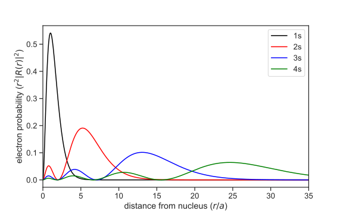
Spherical Harmonics
In the next step, we want to graph the spherical harmonics. To do
this, we first import all the necessary modules and then define first the
symbolic spherical harmonics, Ylm_sym, and then the numerical function Ylm.
import numpy as np
import matplotlib.pyplot as plt
from matplotlib import cm
import sympy as sp
from sympy.functions.special.spherical_harmonics import Ynm
l, m, theta, phi = sp.symbols("l m theta phi")
Ylm_sym = Ynm(l, m, theta, phi).expand(func=True)
Ylm = sp.lambdify((l, m, theta, phi), Ylm_sym)
The variable Ylm now contains a Python function with 4 arguments (l, m,
theta, phi) and returns the numeric value (complex number, type: complex)
of the spherical harmonics. Since we want to represent the values of the
spherical harmonics as the distance from the origin, which is a positive real
number, we should use the absolute value of the spherical harmonics. The real
spherical harmonics can be obtained by
This can be implemented as follows:
def real_Ylm(l, m, theta, phi):
if m < 0:
return 1.0j * (1.0 / np.sqrt(2)) \
* (Ylm(l, -m, theta, phi) - (-1)**m * Ylm(l, m, theta, phi))
elif m == 0:
return Ylm(l, m, theta, phi)
else:
return (1.0 / np.sqrt(2)) \
* (Ylm(l, -m, theta, phi) + (-1)**m * Ylm(l, m, theta, phi))
To be able to display the function graphically, however, we have to evaluate the function not only at one point but on a two-dimensional grid () and then display the values on this grid. Therefore, we define the grid for and and evaluate the for each point on this grid.
N = 1000
theta = np.linspace(0, np.pi, N)
phi = np.linspace(0, 2*np.pi, N)
theta, phi = np.meshgrid(theta, phi)
l = 3
m = 0
Ylm_num = np.abs(real_Ylm(l, m, theta, phi))
Now, however, we still have a small problem because we want to represent our data points in a Cartesian coordinate system, but our grid points are defined in spherical coordinates. Therefore it is necessary to transform the calculated values of Ylm into the Cartesian coordinate system. The transformation reads:
x = np.cos(phi) * np.sin(theta) * Ylm_num
y = np.sin(phi) * np.sin(theta) * Ylm_num
z = np.cos(theta) * Ylm_num
We took the absolute value of the real spherical harmonics to make sure that
we had a positive real number.
Now we have everything we need to represent the spherical harmonics in 3
dimensions. We do a little trick and map the data points to a number range from
0 to 1 and store these values in the variable colors. This allows us to
colour the spherical harmonics with a colormap
from Matplotlib.
colors = Ylm_num / (Ylm_num.max() - Ylm_num.min())
fig = plt.figure(figsize=(10, 10))
ax = fig.add_subplot(111, projection="3d")
ax.plot_surface(x, y, z, facecolors=cm.seismic(colors))
ax.set_xlim([-1, 1])
ax.set_ylim([-1, 1])
ax.set_zlim([-1, 1])
plt.show()
For the above example with , the graph should look like 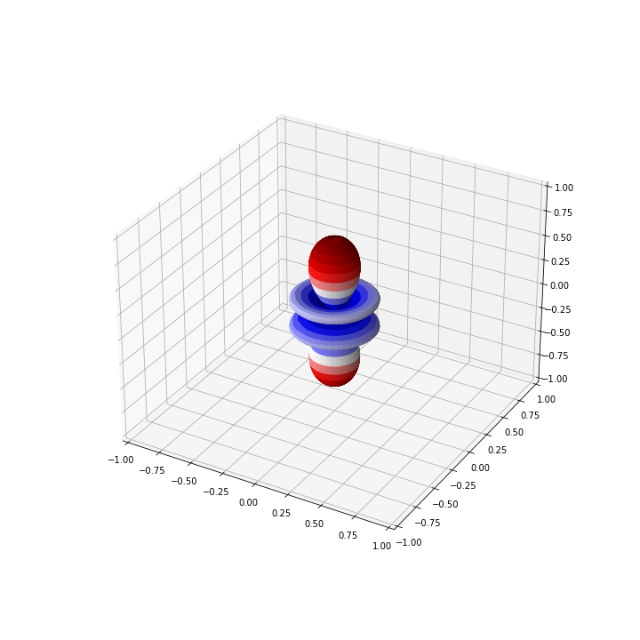
Application: Harmonic Oscillator
The quantum harmonic oscillator is described by the wavefunctions
where the functions \(H_{n}(z)\) are the physicists’ Hermite polynomials:
The corresponding energy levels are
We now want to use SymPy to compute eigenenergies and eigenfunctions.
We start by importing sympy and necessary variables:
import sympy as sp
from sympy.abc import x, m, omega, n, z
The eigenenergies are straightforward to compute. One can just use the definition directly and substitute \(n\) with an integer, e.g. 5:
def energy(n):
e = omega * (n + sp.Rational(1, 2))
return e
e_5 = energy(5)
This outputs \(\frac{11}{2}\). Note that atomic units are used for simplicity.
In order to evaluate the wave function, we have to first compute the Hermite polynomial. There are multiple ways to do it. The first is to use its definition directly and compute higher-order derivatives of the exponential function:
def hermite_direct(n):
h_n = (-1)**n * sp.exp(z**2) * sp.diff(sp.exp(-z**2), (z, n))
h_n = sp.simplify(h_n)
return h_n
Alternatively, we could use recurrence relation for Hermite polynomials. This will be left as an exercise for the course attendees.
For n = 5, we obtain the polynomial
We can then use this to evaluate the wave function:
def wfn(n):
nf = (1/sp.sqrt(2**n * sp.factorial(n))) \
* ((m*omega)/sp.pi)**sp.Rational(1, 4)
expf = sp.exp(-(m*omega*x**2)/2)
hp = hermite_direct(n).subs(z, sp.sqrt(m*omega)*x)
psi_n = sp.simplify(nf * expf * hp)
return psi_n
psi_5 = wfn(5)
For a system with, say, \(m = 1\) and \(\omega = 1\), we can construct its wave function by
psi_5_param = psi_5.subs([(m, 1), (omega, 1)])
Further substituting x with any numerical value would evaluate the
wave function at that point.
We can again convert the SymPy expression to a NumPy function and plot some wavefunctions.
import numpy as np
import matplotlib.pyplot as plt
x_values = np.linspace(-5, 5, 100)
fig, ax = plt.subplots(1, 1, figsize=(8, 5))
ax.set_xlabel('$x$')
ax.plot(x_values, 0.5 * x_values**2, c='k', lw=2)
for i in range(5):
psi_param = wfn(i).subs([(m, 1), (omega, 1)])
psi_numpy = sp.lambdify(x, psi_param)
ax.plot(x_values, psi_numpy(x_values) + (0.5 + i), label=f'n = {i}')
ax.set_xlim(-4, 4)
ax.set_ylim(-0.1, 6.1)
ax.legend()
plt.show()
This code block produces 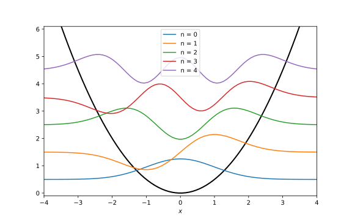
Sometimes one might just want to use SymPy to generate symbolic expressions
to be used in functions. Instead of typing the results in by hand, one could
use one of SymPy’s built-in printers. Here, we shall use NumPyPrinter,
which converts a SymPy expression to a string of Python code:
from sympy.printing.numpy import NumPyPrinter
printer = NumPyPrinter()
code = printer.doprint(psi_5_param)
code = code.replace('numpy', 'np')
print(code)
This output can be copied and used to evaluate \(\psi_{5}(x)\).
Since we often import NumPy with the alias np, numpy from the original
string is replaced.
Molecular Integrals
In quantum chemistry, the very well-known Hartree-Fock (HF) method is used to approximate the ground-state electronic structure of a molecule. The method involves solving the HF equation, which is given by where is the Fock operator, is the -th eigenfunction, is the corresponding eigenvalue. We identify the eigenfunction with canonical molecular orbitals and the eigenvalues with orbital energies.
The Fock operator is defined as with the one-electron Hamiltonian , the Coulomb operator and the exchange operator , and stands for the number of electrons.
Since contains differential operators and and have integrals in them, the HF equation is an integro-differential equation, for which a closed-form solution is extremely difficult to obtain and analytical solutions are only known for the simplest cases.
Therefore, we utilize numerical methods to solve the HF equation. Though popular in other fields, discretisation is very impractical here. Considering the rapid change of electronic density from nuclei to bonds and bond lengths of roughly 1 Å, at least 4 points per Å should be used for a crude representation of the wavefunction. Also, we should add a boundary to properly describe the fall-off of the wavefunction. For a medium-sized molecule, e.g. porphin, which is around 10 Å across, a box of the dimension 15 Å × 15 Å × 5 Å would be appropriate, which translates to 60 × 60 × 20 = 72000 grid points. This is far from practical. If we wish for a finer granulated grid or calculations for larger molecules, discretisation will become infeasible rather quickly.
So, the spatial grid is a very inefficient basis for the HF equation. Because the molecule consists of atoms, it should be possible to represent the molecular orbitals with some sort of combination of atomic orbitals. The simplest combination is the linear combination. In this case, our basis is atom-centered wavefunctions , and the molecular orbitals can be expressed as where indexes the atomic basis functions.
Inserting this Ansatz into the HF equation and projecting both sides onto , we obtain where is the Fock matrix, is the coefficient vector of the -th molecular orbital, is the overlap matrix, and is the energy of the -th molecular orbital.
The new equation is called the Roothaan-Hall equation, where the difficult derivatives and integrals of the unknown molecular orbitals are reduced to derivatives and integrals of known basis functions. After evaluating these integrals in and , the actual solving step is easily done using some linear algebra.
A closer inspection of the matrices and reveals that four types of molecular integrals exist:
- Overlap integrals:
- Kinetic energy integrals:
- nuclear attraction integrals:
- electron repulsion integrals:
In this chapter, some basic concepts of basis functions will be introduced, followed by symbolic calculation of closed-form expressions for molecular integrals. In the end, we will use these expressions to generate a module, which performs all these integrals.
Gaussian Type Orbitals
The Schrödinger equation of the hydrogen atom can be solved analytically and the obtained wave functions have the radial part where , are the principal and azimuthal quantum number, respectively, is the normalisation constant, is the associated Laguerre polynomial and stands for Bohr radius.
Ignoring the normalisation constant and the polynomial factor, the wavefunction boils down to . One may assume that all atomic orbitals have this general form, the so-called Slater-type orbitals (STO). These orbitals have a cusp in the origin, which accurately describes the electron distribution at nuclei.
STOs, however, are not very easy to integrate. Analytically expressions of one-electron integrals involving STOs can be obtained, though they are rather cumbersome. Two-electron integrals involving STOs cannot be solved analytically, so either numerical integration or approximations must be applied. This makes the use of STOs in quantum chemistry very impractical.
Instead, the Gaussian type orbitals (GTO), which have the general form , are widely used for quantum chemistry. Although it does not accurately represent the correct electronic density at nuclei, relatively simple analytical expressions for molecular integrals involving GTOs, including two-electron integrals, exist, even for two-electron integrals
Cartesian Gaussian Orbitals
The most intuitive form of GTOs is the Cartesian form, which is expressed as with the nucleus sitting at and . Some example values of and the corresponding atomic orbitals are shown in the following table:
| Orbital | |||
|---|---|---|---|
| 0 | 0 | 0 | |
| 1 | 0 | 0 | |
| 0 | 1 | 0 | |
| 0 | 0 | 1 | |
| 1 | 1 | 0 | |
| 1 | 0 | 1 | |
| 0 | 1 | 1 | |
| 2 | 0 | 0 | |
| 0 | 2 | 0 | |
| 0 | 0 | 2 |
Gaussian Product Theorem
The existence of relatively simple expressions molecular integrals involving GTOs is partly due to the Gaussian product theorem, which states that the product between two 1s Gaussians (, ) is another 1s Gaussian. We shall demonstrate this theorem for two (unnormalized) 1D-Gaussians and
By taking the product of the two Gaussian functions, we obtain
We can simplify this expression by using the properties of exponents:
In the last step, we completed the square inside the exponent to obtain a Gaussian function. By defining we obtain a new Gaussian at the “center of mass” with the total exponent , scaled by . Since Gaussian orbitals can be easily factored into Cartesian directions, a proof for 3D-Gaussians follows trivially from the proof for 1D-Gaussians.
Contracted Gaussians
Because Gaussians do differ quite a bit from Slater functions, we can make them more accurate by using a linear combination of Gaussians, i.e. where is called a contracted Gaussian. To avoid confusion, we shall call primitive Gaussian.
Apart from being more accurate, another advantage of using contracted Gaussian is the exclusive use of orbitals without radial nodes. In other words, we only need Gaussians of the form Note that the factor is gone and the orbital no longer depends on the principal quantum number . Because we can now omit the index on , we can use , , and instead of the verbose , , and , which are difficult to read when written as exponents. Such Cartesian Gaussians can thus be written as
This simplification can be done for two reasons: On the one hand, the radial nodes are located in the neighbourhood of core orbitals, which do not contribute much to chemical bonding. On the other hand, a linear combination of primitive Gaussians with some negative contraction coefficients can approximate an atomic orbital with nodes.
We shall now take a look at an example of Gaussian basis sets:
#BASIS SET: (6s,3p) -> [2s,1p]
C S
0.7161683735E+02 0.1543289673E+00
0.1304509632E+02 0.5353281423E+00
0.3530512160E+01 0.4446345422E+00
C SP
0.2941249355E+01 -0.9996722919E-01 0.1559162750E+00
0.6834830964E+00 0.3995128261E+00 0.6076837186E+00
0.2222899159E+00 0.7001154689E+00 0.3919573931E+00
This is the STO-3G basis set for the carbon atom. The first line with the
notation (6s,3p) -> [2s,1p] tells us that this basis set consists of
6 primitive Gaussian functions of the s-type and 3 primitive Gaussian
functions of the p-type. These primitive functions are then contracted
to form 2 s-type and 1 p-type contracted Gaussian functions.
The rest of this snippet contains two blocks, with every block starting with a line clarifying the atom and orbital type. The other lines have either two or three columns. The first block describes an s-type basis function with the exponents listed in the first column and the contraction coefficients listed in the second column. The second block describes an s-type and a p-type basis function with the same orbital exponents listed in the first column. The next two columns contain the contraction coefficients for s-orbitals and p-orbitals, respectively.
The contraction coefficients do NOT include the normalization constants for the primitive Gaussians. So you have to include it when constructing contracted Gaussians.
Hermite Gaussian Orbitals
Though very intuitive, the Cartesian Gaussians are not easy to integrate except for s-type Gaussians, since the polynomial product makes the evaluation quite tedious. It would be nice if we could somehow generate integrals involving higher orbital angular momenta from integrals involving only s-type Gaussians.
Hermite Gaussian Functions
We now introduce another form of GTOs, the Hermite Gaussians. Ignoring the normalisation constant, they are defined as
Although it might look very complicated at first glance, it is essentially a Cartesian Gaussian with the Cartesian polynomial part replaced by a polynomial obtained through differentiation of an s-type Gaussian, or the Hermite polynomial.
Just like their Cartesian counterparts, the Hermite Gaussians can also be factored into Cartesian directions. A 1D Hermite Gaussian of degree can thus be expressed as
Recurrence Relations
While it is straightforward to generate a Cartesian Gaussian of degree from a degree one by just multiplying to it, i.e. the relation for Hermite Gaussians is a bit complicated.
We shall start with the definition of Hermite Gaussians, which states The -th derivative of the product can be calculated using the general Leibniz rule:
Since the first factor is a first-order polynomial in , derivatives with order 2 or higher become zero. The whole expression thus simplifies to Combined with the equation for above, we get We can thus get the Hermite Gaussian of order with Hermite Gaussians of order and . This kind of relation, where an object with one or several indices is related to objects with smaller indices, is called a recurrence relation.
The recurrence relation for Hermite Gaussians is often expressed as which is obtained by simple algebraic manipulation from the recurrence relation above.
Why are Hermite Gaussians useful? suppose we want to evaluate an integral involving a -th order Hermite Gaussian, we can reduce it to an integral involving a zeroth order Hermite Gaussian as follows where denotes an arbitrary function. Therefore, if we can solve an integral for , we can solve the integrals for all .
Hermite Gaussian Expansion
However, since our basis functions are Cartesian Gaussians, we have to expand them into Hermite Gaussians:
To find the expansion coefficients, we shall examine : Note that we have used the recurrence relation for Hermite Gaussians in the second last step. Since the summation indices can be named as we like, we shall replace with in the first sum and with in the second sum to obtain By evaluating directly, we obtain Comparing the coefficients for each , we can get the recurrence relation for the expansion coefficients:
Such recurrence relations can be intuitively implemented in a recursive manner:
import sympy as sp
from functools import cache
@cache
def get_ckn(k, n, p):
"""
Calculate the expansion coefficient C_{k,n} for a
Cartesian Gaussian basis function with angular momentum n
in terms of Hermite Gaussians of order k.
The recursive formula used is:
C_{k, n} = 1/(2 * p) * C_{k-1, n-1} + (k + 1) * C_{k+1, n-1}
Args:
k (int): Order of the Hermite Gaussian function.
n (int): Angular momentum of the Cartesian Gaussian basis function.
p (float): Exponent of the Gaussian functions.
Returns:
float: Expansion coefficient C_{k, n}.
"""
if k == n == 0:
return sp.sympify(1)
elif (k == 0) and (n == 1):
return sp.sympify(0)
elif (k == 1) and (n == 1):
return (1 / (2 * p))
elif k > n:
return sp.sympify(0)
elif k < 0:
return sp.sympify(0)
else:
return (1 / (2 * p)) * get_ckn(k - 1, n - 1, p) \
+ (k + 1) * get_ckn(k + 1, n - 1, p)
The function decorator cache is used to speed up the execution.
Overlap Integrals
We can now proceed to calculate molecular integrals, starting with overlap integrals. An overlap integral between two centres and are defined as Because Cartesian Gaussians are factorizable, we can calculate the overlap for each Cartesian direction, i.e., Therefore, we only have to deal with overlaps between 1D Gaussians.
Hermite Gaussian Overlaps
We now examine the overlap between two (unnormalized) 1D Hermite Gaussian: By using the Gaussian product theorem the integral is reduced to with Substituting the variables back, we get Differentiate this expression with respect to and will deliver us with all possible overlap integrals between Hermite Gaussians.
Cartesian Gaussian Overlaps
By expanding Cartesian Gaussians into Hermite Gaussians, we can easily obtain their overlaps, i.e., So, we can obtain the Cartesian Gaussian overlaps by linearly combining Hermite Gaussian Overlaps with the corresponding Hermite expansion coefficients.
We shall now use SymPy to generate formulas for cartesian overlaps.
Code Generation
We start by importing necessary modules, including our function
for calculating Hermite expansion coefficients. It is assumed here that
this function is called get_ckn and located in the file hermite_expansion.py.
import sympy as sp
from sympy.printing.numpy import NumPyPrinter, \
_known_functions_numpy, _known_constants_numpy
import os
from hermite_expansion import get_ckn
Afterwards, we define some symbols for SymPy
# Initialisation of symbolic variables
alpha, beta = sp.symbols('alpha beta', real=True, positive=True)
AX, BX = sp.symbols('A_x B_x', real=True)
as well as the overlap
# Overlap for l_a = l_b = 0
S_00 = sp.sqrt(sp.pi / (alpha + beta)) * sp.exp(
-((alpha * beta) / (alpha + beta)) * (AX**2 - 2 * AX * BX + BX**2)
)
Since we need Hermite Gaussian overlaps up to a certain maximum value of angular momentum, we shall write a function to generate them:
def generate_hermite_overlaps(lmax):
hermite_overlaps = {}
for k in range(0, lmax + 1):
for l in range(0, lmax + 1):
ho_kl = sp.simplify(sp.diff(sp.diff(S_00, AX, k), BX, l))
hermite_overlaps[(k, l)] = ho_kl
return hermite_overlaps
One specific overlap integral between two Cartesian Gaussians with
angular momenta i and j can then be calculated using the following function:
def get_single_overlap(i, j, hermite_overlaps):
overlap = 0
for k in range(0, i + 1):
cki = get_ckn(k, i, alpha)
for l in range(0, j + 1):
clj = get_ckn(l, j, beta)
overlap += cki * clj * hermite_overlaps[(k, l)]
overlap = sp.factor_terms(overlap)
return overlap
We can then write a function to generate all Cartesian Gaussian overlaps up to a certain maximum angular momentum:
def generate_overlaps(lmax):
hermite_overlaps = generate_hermite_overlaps(lmax)
overlaps = {}
# Loop through all combinations of Gaussian functions up to order lmax
for i in range(lmax + 1):
for j in range(lmax + 1):
print(i, j)
# Store the overlap integral in the dictionary with the key (i, j)
overlaps[(i, j)] = get_single_overlap(i, j, hermite_overlaps)
# Return the dictionary containing the overlap integrals
return overlaps
We can then set
LMAX = 2
and generate formulas for all possible overlaps up to LMAX.
By inspecting the generated expressions, one might realize that some
expressions occur very frequently, e.g. AX - BX, or alpha + beta.
We can calculate these expressions once and store the value to avoid
repeated calculations. To achieve this, we can substitute these expressions
with some new symbols:
# Substitute repeated expressions
X_AB, X_AB_SQ, P, Q = sp.symbols(
'ab_diff ab_diff_squared ab_sum ab_product',
real=True,
)
subsdict = {
AX - BX: X_AB,
AX**2 - 2 * AX * BX + BX**2: X_AB_SQ,
alpha + beta: P,
alpha * beta: Q,
}
s_ij = generate_overlaps(LMAX)
s_ij = {k: v.subs(subsdict) for (k, v) in s_ij.items()}
We are almost done! The last step is to wrap these expressions into a
Python function stored in a .py file. For this, we can write the following
function:
def write_overlaps_py(overlaps, printer, path=''):
with open(os.path.join(path, 'S.py'), 'w') as f:
f.write('import numpy as np\n')
f.write('def s_ij(i, j, alpha, beta, ax, bx):\n')
# Calculate repeated expressions
f.write(' ab_diff = ax - bx\n')
f.write(' ab_diff_squared = ab_diff**2\n')
f.write(' ab_sum = alpha + beta\n')
f.write(' ab_product = alpha * beta\n')
f.write('\n')
# Write integrals for different cases
for i, (key, value) in enumerate(overlaps.items()):
if i == 0:
if_str = 'if'
else:
if_str = 'elif'
ia, ib = key
code = printer.doprint(value)
f.write(f' {if_str} (i, j) == ({ia}, {ib}):\n')
f.write(f' return {code}\n')
f.write(' else:\n')
f.write(' raise NotImplementedError\n')
In this function, we have imported NumPy with the alias np. To convert
the symbolic expressions into Python code with functions beginning with this
alias, we set up a NumPyPrinter:
_numpy_known_functions = {k: f'np.{v}' for k, v
in _known_functions_numpy.items()}
_numpy_known_constants = {k: f'np.{v}' for k, v
in _known_constants_numpy.items()}
printer = NumPyPrinter()
printer._module = 'np'
printer.known_functions = _numpy_known_functions
printer.known_constants = _numpy_known_constants
And finally, we can generate the Python file with all the integral expressions:
MY_PATH = '.'
write_overlaps_py(s_ij, printer, path=MY_PATH)
The path '.' stands for the location where you execute your Python script.
You can replace this with any valid path in your computer to generate
S.py there.
Testing on molecules
From now on, we will define several classes to help us with the calculation of molecular integrals. We will start with the minimal structure of these classes and extend them throughout this chapter. The most recent version of these classes can be found in subsection 4.4.1.
We have written our own routine for calculating overlap integrals. To confirm its functionality, we shall do some testing on real molecules. For this, we define several classes to make a convenient interface for molecules and basis sets.
The Atom Class
Chemists work often with atomic symbols, which are not intuitive for computers. They would prefer atomic numbers. Therefore, we first define a dictionary that has atomic symbols as keys and atomic numbers as values:
ATOMIC_NUMBER = {
'H': 1, 'He': 2,
'Li': 3, 'Be': 4, 'B': 5, 'C': 6, 'N': 7, 'O': 8, 'F': 9, 'Ne': 10,
'Na': 11, 'Mg': 12, 'Al': 13, 'Si': 14, 'P': 15, 'S': 16, 'Cl': 17, 'Ar': 18,
'K': 19, 'Ca': 20,
'Sc': 21, 'Ti': 22, 'V': 23, 'Cr': 24, 'Mn': 25,
'Fe': 26, 'Co': 27, 'Ni': 28, 'Cu': 29, 'Zn': 30,
'Ga': 31, 'Ge': 32, 'As': 33, 'Se': 34, 'Br': 35, 'Kr': 36,
'Rb': 37, 'Sr': 38,
'Y': 39, 'Zr': 40, 'Nb': 41, 'Mo': 42, 'Tc': 43,
'Ru': 44, 'Rh': 45, 'Pd': 46, 'Ag': 47, 'Cd': 48,
'In': 49, 'Sn': 50, 'Sb': 51, 'Te': 52, 'I': 53, 'Xe': 54,
'Cs': 55, 'Ba': 56,
'La': 57, 'Ce': 58, 'Pr': 59, 'Nd': 60, 'Pm': 61, 'Sm': 62, 'Eu': 63,
'Gd': 64, 'Tb': 65, 'Dy': 66, 'Ho': 67, 'Er': 68, 'Tm': 69, 'Yb': 70,
'Lu': 71, 'Hf': 72, 'Ta': 73, 'W': 74, 'Re': 75,
'Os': 76, 'Ir': 77, 'Pt': 78, 'Au': 79, 'Hg': 80,
'Tl': 81, 'Pb': 82, 'Bi': 83, 'Po': 84, 'At': 85, 'Rn': 86,
'Fr': 87, 'Ra': 88,
'Ac': 89, 'Th': 90, 'Pa': 91, 'U': 92, 'Np': 93, 'Pu': 94, 'Am': 95,
'Cm': 96, 'Bk': 97, 'Cf': 98, 'Es': 99, 'Fm': 100, 'Md': 101, 'No': 102,
'Lr': 103, 'Rf': 104, 'Db': 105, 'Sg': 106, 'Bh': 107,
'Hs': 108, 'Mt': 109, 'Ds': 110, 'Rg': 111, 'Cn': 112,
'Nh': 113, 'Fl': 114, 'Mc': 115, 'Lv': 116, 'Ts': 117, 'Og': 118,
}
We save this dictionary in a file called atomic_data.py.
The Atom class should represent an atom with a specific symbol Vand
coordinate. The class should therefore include the following attributes:
atomic_number: A dictionary with keys corresponding to atomic symbols and values corresponding to atomic numbers.symbol: The atomic symbol of the atom.coord: The coordinate of the atom.atnum: The atomic number corresponding to the symbol of the atom.
The class includes one method, __init__, which initializes a new atom
with the given symbol and coordinate. The optional argument unit specifies
the unit of the given coordinates and can be either A (Ångström) or
B (Bohr).
import numpy as np
from atomic_data import ATOMIC_NUMBER
class Atom:
"""
A class representing an atom with a specific symbol and coordinate.
Attributes:
atomic_number (dict): A dictionary with keys corresponding to
atomic symbols and values corresponding to atomic numbers.
symbol (str): The atomic symbol of the atom.
coord (list[float]): The coordinate of the atom.
atnum (int): The atomic number corresponding to the symbol of the atom.
Methods:
__init__(self, symbol: str, coord: list[float]) -> None:
Initializes a new atom with the given symbol and coordinate.
"""
def __init__(self, symbol: str, coord: list[float], unit='B') -> None:
"""
Initializes a new `atom` object.
Parameters:
symbol (str): The atomic symbol of the atom.
coord (list): The coordinate of the atom.
Returns:
None
"""
self.symbol = symbol
self.coord = np.array(coord)
self.unit = unit
self.atnum = ATOMIC_NUMBER[self.symbol]
This class is saved in a file called atom.py.
Because we are chemists, we are not satisfied with only atoms. We want to
combine them into molecules, hence a Molecule class is needed.
The Molecule Class
The Molecule class should represent a molecule, therefore, the following
attributes can be useful:
atomlist: A list ofAtomobjects representing the atoms in the molecule.natom: The number of atoms in the molecule.basisfunctions: A list ofGaussianobjects representing the basis functions of the molecule.S: A matrix representing the overlap integrals between basis functions.
import numpy as np
import copy
from atom import Atom
from basis_set import BasisSet
a0 = 0.529177210903 # Bohr radius in angstrom
class Molecule:
"""
A class representing a molecule.
Attributes:
atomlist (list): A list of `atom` objects representing the atoms
in the molecule.
natom (int): The number of atoms in the molecule.
basisfunctions (list): A list of `Gaussian` objects representing
the basis functions of the molecule.
S (ndarray): A matrix representing the overlap integrals between
basis functions.
Methods:
__init__(self) -> None: Initializes a new `molecule` object.
set_atomlist(self,a: list) -> None: Sets the `atomlist` attribute
to the given list of `atom` objects.
read_from_xyz(self,filename: str) -> None: Reads the coordinates of
the atoms in the molecule from an XYZ file.
get_basis(self, name: str = "sto-3g") -> None: Computes the
basis functions for the molecule using the specified basis set.
get_S(self) -> None: Computes the overlap integrals between
basis functions and sets the `S` attribute.
"""
def __init__(self) -> None:
"""
Initializes a new `Molecule` object.
Returns:
None
"""
self.atomlist = []
self.natom = len(self.atomlist)
self.basisfunctions = []
self.S = None
def set_atomlist(self, a: list) -> None:
"""
Sets the `atomlist` attribute to the given list of `Atom` objects.
Parameters:
a (list): A list of `Atom` objects representing the atoms
in the molecule.
Returns:
None
"""
self.atomlist = []
for at in a:
if at.unit == 'A':
at.coord = at.coord / a0
elif at.unit == 'B':
pass
else:
raise ValueError('Invalid unit for atom coordinates.')
self.atomlist.append(at)
self.natom = len(self.atomlist)
def read_from_xyz(self, filename: str) -> None:
"""
Reads the coordinates of the atoms in the molecule from an XYZ file.
Parameters:
filename (str): The name of the XYZ file to read.
Returns:
None
"""
with open(filename, "r") as f:
for line in f:
tmp = line.split()
if len(tmp) == 4:
symbol = tmp[0]
coord = np.array([float(x) for x in tmp[1:]]) / a0
at = Atom(symbol, coord)
self.atomlist.append(at)
self.natom = len(self.atomlist)
def get_basis(self, name: str = "sto-3g") -> None:
"""
Computes the basis functions for the molecule using the
specified basis set.
Parameters:
name (str): The name of the basis set to use. Default is "sto-3g".
Returns:
None
"""
self.basisfunctions = []
# Initialize BasisSet instance
basis = BasisSet(name=name)
# Generate unique list of symbols
elementlist = set([at.symbol for at in self.atomlist])
# Return basis dictionary
basis = basis.get_basisfunctions(elementlist)
for at in self.atomlist:
bfunctions = basis[at.symbol]
for bf in bfunctions:
newbf = copy.deepcopy(bf)
newbf.set_A(at.coord)
self.basisfunctions.append(newbf)
def get_S(self) -> None:
"""
Computes the overlap integrals between basis functions and sets
the `S` attribute.
Returns:
None
"""
nbf = len(self.basisfunctions)
self.S = np.zeros((nbf, nbf))
for i in np.arange(0, nbf):
for j in np.arange(i, nbf):
self.S[i,j] = self.basisfunctions[i].S(self.basisfunctions[j])
self.S[j,i] = self.S[i,j]
We have utilized the BasisSet class to initialize basis sets for our
molecule, which we will define now.
The BasisSet Class
The BasisSet class should contain a set of GTOs and be able to calculate
molecular integrals between them. Therefore, we shall define the Gaussian
class first for the integral handling.
import numpy as np
import json
import os
from atomic_data import ATOMIC_NUMBER
import S
class Gaussian:
"""
A class representing a Cartesian Gaussian function for molecular integrals.
"""
def __init__(self, A, exps, coefs, ijk):
"""
Initialize the Gaussian function with given parameters.
Parameters:
A (array-like): The origin of the Gaussian function.
exps (array-like): A list of exponents.
coefs (array-like): A list of coefficients.
ijk (tuple): A tuple representing the angular momentum components
(l, m, n).
"""
self.A = np.asarray(A)
self.exps = np.asarray(exps)
self.coefs = np.asarray(coefs)
self.ijk = ijk
self.get_norm_constants()
def set_A(self, A):
"""
Set the origin of the Gaussian function.
Parameters:
A (array-like): The origin of the Gaussian function.
"""
self.A = np.asarray(A)
def get_norm_constants(self):
"""
Calculate the normalization constants for the Gaussian function.
"""
self.norm_const = np.zeros(self.coefs.shape)
for i, alpha in enumerate(self.exps):
a = S.s_ij(self.ijk[0], self.ijk[0], alpha, alpha,
self.A[0], self.A[0])
b = S.s_ij(self.ijk[1], self.ijk[1], alpha, alpha,
self.A[1], self.A[1])
c = S.s_ij(self.ijk[2], self.ijk[2], alpha, alpha,
self.A[2], self.A[2])
self.norm_const[i] = 1.0 / np.sqrt(a * b * c)
def __str__(self):
"""
Generate a string representation of the Gaussian function.
Returns:
str: A string representation of the Gaussian function.
"""
strrep = "Cartesian Gaussian function:\n"
strrep += "Exponents = {}\n".format(self.exps)
strrep += "Coefficients = {}\n".format(self.coefs)
strrep += "Origin = {}\n".format(self.A)
strrep += "Angular momentum: {}".format(self.ijk)
return strrep
def S(self, other):
"""
Calculate the overlap integral between this Gaussian and
another Gaussian function.
Parameters:
other (Gaussian): Another Gaussian function.
Returns:
float: The overlap integral value.
"""
overlap = 0.0
for ci, alphai, normi in zip(self.coefs, self.exps,
self.norm_const):
for cj, alphaj, normj in zip(other.coefs, other.exps,
other.norm_const):
a = S.s_ij(self.ijk[0], other.ijk[0], alphai, alphaj,
self.A[0], other.A[0])
b = S.s_ij(self.ijk[1], other.ijk[1], alphai, alphaj,
self.A[1], other.A[1])
c = S.s_ij(self.ijk[2], other.ijk[2], alphai, alphaj,
self.A[2], other.A[2])
overlap += ci * cj * normi * normj * a * b * c
return overlap
Currently, this class can only calculate overlap integrals. We will extend this class with other molecular integrals in the coming lectures.
We can now construct the BasisSet class. It should be able to read
basis sets in JSON format and
instance objects from the Gaussian class.
class BasisSet:
# Dictionary that maps angular momentum to a list of (i,j,k) tuples
# representing the powers of x, y, and z
cartesian_power = {
0: [(0, 0, 0)],
1: [(1, 0, 0), (0, 1, 0), (0, 0, 1)],
2: [(1, 1, 0), (1, 0, 1), (0, 1, 1), (2, 0, 0), (0, 2, 0), (0, 0, 2)],
}
def __init__(self, name="sto-3g"):
"""
Initialize a new basisSet object with the given name.
Parameters:
name (str): The name of the basis set to use.
"""
self.name = name
def get_basisfunctions(self, elementlist, path="."):
"""
Generate the basis functions for a list of elements.
Parameters:
elementlist (list): A list of element symbols.
path (str): The path to the directory containing the basis set files.
Returns:
dict: A dictionary mapping element symbols to lists of
Gaussian basis functions.
"""
try:
# Load the basis set data from a JSON file
with open(
os.path.join(path, f"{self.name}.json"), "r",
) as basisfile:
basisdata = json.load(basisfile)
except FileNotFoundError:
print("Basis set file not found!")
return None
basis = {} # Initialize dictionary containing basis sets
for element in elementlist:
basisfunctions = []
# Get the basis function data for the current element
# from the JSON file
basisfunctionsdata = basisdata["elements"][
str(ATOMIC_NUMBER[element])
]["electron_shells"]
for bfdata in basisfunctionsdata:
for i, angmom in enumerate(bfdata["angular_momentum"]):
exps = [float(e) for e in bfdata["exponents"]]
coefs = [float(c) for c in bfdata["coefficients"][i]]
# Generate Gaussian basis functions for each
# angular momentum component
for ikm in self.cartesian_power[angmom]:
basisfunction = Gaussian(np.zeros(3), exps, coefs, ikm)
# Normalize the basis functions using the S method
# of the Gaussian class
norm = basisfunction.S(basisfunction)
basisfunction.coefs = basisfunction.coefs / np.sqrt(norm)
basisfunctions.append(basisfunction)
basis[element] = basisfunctions
return basis
You can download various basis sets from the Basis Set Exchange website. Make sure to download the basis sets in the JSON format.
You can also download some common basis sets from the list
- STO-3G: A minimal basis set.
- 6-31G: A Pople basis set.
- 6-31G*: A Pople basis set with polarisation functions.
- cc-pVDZ: A Dunning basis set (with polarisation functions).
Nuclear Attraction Integrals
The next type of integrals we shall examine are the nuclear attraction integrals. A nuclear attraction integral between two basis functions and centered at and , respectively, and with respect to a nucleus is defined as where is the nuclear charge of . Just like overlap integrals, we shall at first calculate the nuclear attraction integrals between 2 s-orbitals, i.e. , For notational simplicity, we will define . Integrals involving higher angular momenta can then be obtained by applying recursive relations of Hermite Gaussians.
However, unlike the overlap integrals, nuclear attraction integrals are not factorizable because of the factor . Therefore, we have to use some tricks.
Evaluation of
Remember the 1D Gaussian integral If we choose (and change the integration variable to ), we obtain This means we can rewrite the factor as Substituting this back into the nuclear attraction integral, we get We have thus transformed the original 3-dimensional integral into a 4-dimensional integral. Wait what? Shouldn’t we simplify the expressions instead of complicating them? Well, the new integral does not have the annoying factor and is now separable.
We at first apply Gaussian product theorem to , which gives us with , , and . The 4-dimensional integral is then The product Gaussian does not explicitly depend on vector , but only the length . Therefore, it is a 1D Gaussian and we can apply Gaussian product theorem to it and the Gaussian in to obtain with . Note that we have assumed that Fubini’s theorem holds. The vector is just like for our first product Gaussian, but its exact form is not important, because it just represents a constant translation in and we are going to integrate over the whole space anyway.
The integral over is now just a 3D Gaussian integral and we already know the result. By inserting it, a one-dimensional remains: We have used the symmetry of the remaining Gaussian to change the integration limits to and . To “solve” this integral, we introduce a new variable , whose differential is
By performing this substitution, the integral becomes Note that the integral limits are changed to and upon substitution. The remaining integral, unfortunately, cannot be solved analytically. We thus introduce the Boys function: with which the original integral can be written as
Although the last expression we derived does not have any integral signs, the Boys function is still an integral. So what did we achieve? We started from a 3-dimensional integral over the whole space and could reduce it to a 1-dimensional integral over the interval . This is a huge simplification since such 1D integrals can be efficiently approximated using techniques like series expansion.
Substituting all variables back, we obtain the final expression for :
Evaluation of arbitrary nuclear attraction integrals
We can now obtain the nuclear attraction integral between Hermite Gaussians of arbitrary angular momenta by utilizing its definition through derivatives: The dependency on nuclear coordinates and comes from the exponential part as well as the Boys function. While we already know how to differentiate the exponential part, we still need to find derivatives of the Boys function. We start by taking the derivative of the Boys function directly using its definition:
Although we were not able to get something simpler through differentiation, at least the expression does not get more complicated and we still only have to evaluate Boys function numerically.
Now we can differentiate with respect to and according to the desired angular momenta to obtain arbitrary nuclear attraction integrals between Hermite Gaussians. To obtain nuclear attraction integrals between Cartesian Gaussians, , we simply use Hermite Gaussian expansion:
Although we have now derived a general expression for nuclear attraction integrals, the expressions are everything but simple. It would be a nightmare if you had to evaluate them by hand. So let us use SymPy to generate the formulae symbolically and let the computer do the work for us.
Code Generation
Again, we start by importing the necessary modules, including our function
for calculating Hermite expansion coefficients. It is assumed here that
this function is called get_ckn and located in the file hermite_expansion.py.
import sympy as sp
from sympy.printing.numpy import NumPyPrinter, \
_known_functions_numpy, _known_constants_numpy
import os
from hermite_expansion import get_ckn
Afterwards, we define some symbols for SymPy. Since we are now dealing with 3-dimensional Gaussians, we need a bit more symbols than before.
# Initialisation of symbolic variables
alpha, beta = sp.symbols('alpha beta', real=True, positive=True)
AX, AY, AZ = sp.symbols('A_x A_y A_z', real=True)
BX, BY, BZ = sp.symbols('B_x B_y B_z', real=True)
CX, CY, CZ = sp.symbols('C_x C_y C_z', real=True)
Because the Boys function is not (yet) implemented in SymPy, we have to do it ourselves:
class boys(sp.Function):
@classmethod
def eval(cls, n, x):
pass
def fdiff(self, argindex):
return -boys(self.args[0] + 1, self.args[1])
We have left out the eval method because we will never use SymPy to
evaluate Boys functions, for which this method is needed. The fdiff method,
however, is important, because it tells SymPy how to evaluate derivatives of
Boys functions.
Now we can define :
# Nuclear attraction for (i, j, k) = (l, m, n) = (0, 0, 0)
PX = (alpha * AX + beta * BX) / (alpha + beta)
PY = (alpha * AY + beta * BY) / (alpha + beta)
PZ = (alpha * AZ + beta * BZ) / (alpha + beta)
RPC = (CX - PX)**2 + (CY - PY)**2 + (CZ - PZ)**2
V_00 = ((2 * sp.pi) / (alpha + beta)) \
* sp.exp(-alpha * beta *
((AX - BX)**2 + (AY - BY)**2 + (AZ - BZ)**2) / (alpha + beta)) \
* boys(0, (alpha + beta) * RPC)
V_00 = sp.simplify(V_00)
Because we have to work with all three components of angular momentum, it would be very wasteful to iterate over all indices independently. Suppose we want to calculate the nuclear attraction integrals for just s- and p-orbitals, which means that the maximum angular momentum is 1. If we iterate over , , and independently from 0 to 1, we will end up with orbitals with , which is definitely not s- or p-orbital. Because the symbolic generation of nuclear attraction integrals can be rather time-consuming, we want to avoid such unnecessary calculations. Furthermore, because we want to calculate the integrals for Cartesian Gaussians using a linear combination of integrals for Hermite Gaussians, with the latter required multiple times during the calculation, it can be helpful to store them at first in a dictionary. To achieve both goals, we define the following functions:
def generate_triple(ijk):
new = [ijk[:] for _ in range(3)]
for i in range(3):
new[i][i] += 1
return new
def generate_derivative(expr, var):
return sp.factor_terms(sp.diff(expr, var))
def generate_tree(lmax, der_init, var):
ijk = [[0, 0, 0]]
derivatives = [der_init]
ijk_old = ijk[:]
derivatives_old = derivatives[:]
for _ in range(lmax):
ijk_new = []
derivatives_new = []
for item, expr in zip(ijk_old, derivatives_old):
new_ijk = generate_triple(item)
for index, n in enumerate(new_ijk):
ijk.append(n)
ijk_new.append(n)
new_der = generate_derivative(expr, var[index])
derivatives.append(new_der)
derivatives_new.append(new_der)
ijk_old = ijk_new[:]
derivatives_old = derivatives_new[:]
return ijk, derivatives
Now we can proceed to the generation of nuclear attraction integrals, starting with Hermite Gaussians:
LMAX = 1
ijk, dijk = generate_tree(LMAX, V_00, (AX, AY, AZ))
ijklmn = []
derivatives_ijklmn = []
for i, d in zip(ijk, dijk):
lmn, dlmn = generate_tree(LMAX, d, [BX, BY, BZ])
for j, e in zip(lmn, dlmn):
ijklmn.append(i + j)
derivatives_ijklmn.append(e)
derivatived_dict = {
tuple(item): deriv for item, deriv in zip(ijklmn, derivatives_ijklmn)
}
Now we can easily generate nuclear attraction integrals between two Cartesian Gaussians with arbitrary angular momenta:
def get_single_nuclear_attraction(i, j, k, l, m, n, ddict):
vint = 0
for o in range(i + 1):
for p in range(j + 1):
for q in range(k + 1):
for r in range(l + 1):
for s in range(m + 1):
for t in range(n + 1):
vint += get_ckn(o, i, alpha) * \
get_ckn(p, j, alpha) * \
get_ckn(q, k, alpha) * \
get_ckn(r, l, beta) * \
get_ckn(s, m, beta) * \
get_ckn(t, n, beta) * \
ddict[(o, p, q, r, s, t)]
vint = sp.factor_terms(vint)
return vint
After defining some repeated expressions for substitution, we can finally generate all nuclear attraction integrals between two Cartesian Gaussians up to a maximum angular momentum:
# Substitute repeated expressions
P, Q, R_AB, P_RPC = sp.symbols('p q r_AB p_RPC', real=True)
subsdict = {
alpha + beta: P,
alpha * beta: Q,
(AX - BX)**2 + (AY - BY)**2 + (AZ - BZ)**2: R_AB,
(
(-AX * alpha - BX * beta + CX * (alpha + beta))**2
+ (-AY * alpha - BY * beta + CY * (alpha + beta))**2
+ (-AZ * alpha - BZ * beta + CZ * (alpha + beta))**2
) / (alpha + beta): P_RPC,
}
v_ij = {}
for key in derivatived_dict:
print(key)
vint = get_single_nuclear_attraction(*key, derivatived_dict)
v_ij[key] = vint.subs(subsdict)
Again, we want to write a function to export the generated expressions to a Python file:
def write_nuclear_attractions_py(nuclear_attractions, printer, path=''):
with open(os.path.join(path, 'V.py'), 'w') as f:
f.write('import numpy as np\n')
f.write('from scipy.special import hyp1f1\n')
f.write('\n\n')
f.write('def boys(n, t): \n')
f.write(' return hyp1f1(n + 0.5, n + 1.5, -t)'
' / (2.0 * n + 1.0)\n')
f.write('\n\n')
f.write('def v_ij(i, j, k, l, m, n, alpha, beta, A, B, C):\n')
# Calculate repeated expressions
f.write(' p = alpha + beta\n')
f.write(' q = alpha * beta\n')
f.write(' AB = A - B\n')
f.write(' r_AB = np.dot(AB, AB)\n')
f.write(' P = (alpha * A + beta * B) / p\n')
f.write(' PC = P - C\n')
f.write(' p_RPC = p * np.dot(PC, PC)\n')
f.write(' A_x, A_y, A_z = A\n')
f.write(' B_x, B_y, B_z = B\n')
f.write(' C_x, C_y, C_z = C\n')
f.write('\n')
# Write integrals
for i, (key, value) in enumerate(nuclear_attractions.items()):
if i == 0:
if_str = 'if'
else:
if_str = 'elif'
code = printer.doprint(value)
f.write(' {} (i, j, k, l, m, n) == ({}, {}, {}, {}, {}, {}):\n'
.format(if_str, *(str(k) for k in key)))
f.write(f' return {code}\n')
f.write(' else:\n')
f.write(' raise NotImplementedError\n')
Because we import NumPy with the alias np, we set up a NumPyPrinter to convert
the symbolic expressions into Python code with functions beginning with this
alias:
_numpy_known_functions = {k: f'np.{v}' for k, v
in _known_functions_numpy.items()}
_numpy_known_constants = {k: f'np.{v}' for k, v
in _known_constants_numpy.items()}
printer = NumPyPrinter(settings={'allow_unknown_functions': True})
printer._module = 'np'
printer.known_functions = _numpy_known_functions
printer.known_constants = _numpy_known_constants
Because we need the function boys which is known to NumPy, we have to
set the option allow_unknown_functions to True. It is now our
responsibility to ensure that all the other functions are supported by
NumPy or native Python.
Finally, we can generate the Python file with all the integral expressions:
MY_PATH = '.'
write_nuclear_attractions_py(v_ij, printer, path=MY_PATH)
This will generate a file called V.py with the integrals we want.
Testing on Molecules
In order to test our generated expressions for nuclear attraction integrals,
we have to extend our Gaussian class and Molecule class to accommodate
this. For the Gaussian class, we extend it with the VC method:
import V
def VC(self, other, RC):
"""
Calculate the nuclear attraction integral between this Gaussian and
another Gaussian function.
Parameters:
other (Gaussian): Another Gaussian function.
RC (array-like): The coordinates of the nucleus.
Returns:
float: The nuclear attraction integral value.
"""
v_en = 0.0
for ci, alphai, normi in zip(self.coefs, self.exps,
self.norm_const):
for cj, alphaj, normj in zip(other.coefs, other.exps,
other.norm_const):
v_en += ci * cj * normi * normj * V.v_ij(
self.ijk[0], self.ijk[1], self.ijk[2],
other.ijk[0], other.ijk[1], other.ijk[2],
alphai, alphaj, self.A, other.A, RC,
)
return v_en
We can then use this method to extend our Molecule class with two methods
to calculate nuclear attraction integrals:
def get_Vij(self, i, j) -> float:
v_int = 0.0
for at in self.atomlist:
v_int -= at.atnum \
* self.basisfunctions[i].VC(self.basisfunctions[j], at.coord)
return v_int
def get_V(self) -> None:
nbf = len(self.basisfunctions)
self.Ven = np.zeros((nbf, nbf))
for i in np.arange(nbf):
for j in np.arange(i, nbf):
self.Ven[i, j] = self.get_Vij(i, j)
self.Ven[j, i] = self.Ven[i, j]
With the extended classes in hand, we can test our generated expressions on an example molecule, say, ethene. You can download the xyz-file for ethene from here.
After importing the necessary modules, we
load the molecule from an xyz-file and calculate the nuclear attraction
integrals using the method get_V():
import matplotlib.pyplot as plt
from molecule import Molecule
ethene = Molecule()
ethene.read_from_xyz('ethene.xyz')
ethene.get_basis('sto-3g')
ethene.get_V()
nuclear_attractions = ethene.Ven
Instead of printing the individual integrals, we can visualise the whole matrix using a heatmap:
fig, ax = plt.subplots(figsize=(4, 4))
ax.matshow(nuclear_attractions)
fig.tight_layout()
plt.show()
This should give you the following plot:
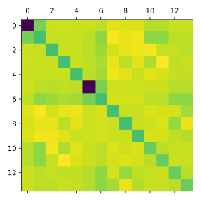
Information for quantum chemistry enthusiasts
You can install the open-source quantum chemistry package PySCF on your PC, which provides a Python interface for molecular integrals, as well as Python implementations of many quantum chemical methods. Unfortunately, PySCF does not support Windows natively, so you have to use Windows Subsystem for Linux if you are a Windows user.
The installation and usage of PySCF is not neccessary for this lecture, you can but do not have to do it. But once you have installed PySCF, you can use the following code to calculate the nuclear attraction integrals using PySCF and compare them with our results:
import numpy as np
from pyscf import gto
mol = gto.M(atom='ethene.xyz', basis='sto-3g')
nuclear_attractions_pyscf = mol.intor("int1e_nuc", hermi=1)
print(np.allclose(nuclear_attractions, nuclear_attractions_pyscf))
Electron Repulsion Integrals
The last type of integrals we need for Hartree-Fock calculations is the electron repulsion integral (ERI). The ERI between four basis functions , , and is defined as with , which is often abbreviated as . The ERI is also known as the two-electron integral.
Evaluation of
You should know the game by now: we will first calculate the ERI between 4 s-orbitals, i.e. , and then apply recursive relations of Hermite Gaussians to obtain integrals involving higher angular momenta.
The ERI between 4 s-orbitals can be derived in a similar way as the nuclear attraction integral. We just use the potential of one electron instead of the potential of a nucleus. After some algebra, we get where
This expression will only become more complicated when we go to higher angular momenta. So let us use SymPy to generate the formulae symbolically.
Code Generation
Again, we start by importing the necessary modules, including our function
for calculating Hermite expansion coefficients. It is assumed here that
this function is called get_ckn and located in the file hermite_expansion.py.
import sympy as sp
from sympy.printing.numpy import NumPyPrinter, \
_known_functions_numpy, _known_constants_numpy
import os
from hermite_expansion import get_ckn
Afterwards, we define some symbols for SymPy. We now have four 3D Gaussians, so a bit more symbols are needed.
# Initialisation of symbolic variables
alpha, beta, gamma, delta = sp.symbols(
'alpha beta gamma delta', real=True, positive=True,
)
AX, AY, AZ = sp.symbols('A_x A_y A_z', real=True)
BX, BY, BZ = sp.symbols('B_x B_y B_z', real=True)
CX, CY, CZ = sp.symbols('C_x C_y C_z', real=True)
DX, DY, DZ = sp.symbols('D_x D_y D_z', real=True)
Again, we define the Boys function
class boys(sp.Function):
@classmethod
def eval(cls, n, x):
pass
def fdiff(self, argindex):
return -boys(self.args[0] + 1, self.args[1])
as well as the function generate_tree which
generates all possible derivatives of Hermite Gaussians up to a certain
angular momentum:
def generate_triple(ijk):
new = [ijk[:] for _ in range(3)]
for i in range(3):
new[i][i] += 1
return new
def generate_derivative(expr, var):
return sp.factor_terms(sp.diff(expr, var))
def generate_tree(lmax, der_init, var):
ijk = [[0, 0, 0]]
derivatives = [der_init]
ijk_old = ijk[:]
derivatives_old = derivatives[:]
for _ in range(lmax):
ijk_new = []
derivatives_new = []
for item, expr in zip(ijk_old, derivatives_old):
new_ijk = generate_triple(item)
for index, n in enumerate(new_ijk):
ijk.append(n)
ijk_new.append(n)
new_der = generate_derivative(expr, var[index])
derivatives.append(new_der)
derivatives_new.append(new_der)
ijk_old = ijk_new[:]
derivatives_old = derivatives_new[:]
return ijk, derivatives
Afterwards, we define the ERI between four s-orbitals:
# Nuclear attraction for (i, j, k) = (l, m, n) = (0, 0, 0)
p = alpha + beta
q = gamma + delta
PX = (alpha * AX + beta * BX) / (alpha + beta)
PY = (alpha * AY + beta * BY) / (alpha + beta)
PZ = (alpha * AZ + beta * BZ) / (alpha + beta)
QX = (gamma * CX + delta * DX) / (gamma + delta)
QY = (gamma * CY + delta * DY) / (gamma + delta)
QZ = (gamma * CZ + delta * DZ) / (gamma + delta)
mu = alpha * beta / p
nu = gamma * delta / q
rho = p * q / (p + q)
RAB = (AX - BX)**2 + (AY - BY)**2 + (AZ - BZ)**2
RCD = (CX - DX)**2 + (CY - DY)**2 + (CZ - DZ)**2
RPQ = sp.simplify((PX - QX)**2 + (PY - QY)**2 + (PZ - QZ)**2)
G_0000 = sp.simplify(
((2 * sp.pi**sp.Rational(5, 2)) / (p * q * sp.sqrt(p + q))) \
* sp.exp(-mu * RAB) * sp.exp(-nu * RCD) * boys(0, rho * RPQ)
)
Now we can proceed to the generation of ERIS between higher angular momenta. As we have always done, start with ERIs between Hermite Gaussians:
LMAX = 1
ijk, dijk = generate_tree(LMAX, G_0000, (AX, AY, AZ))
ijklmn = []
derivatives_ijklmn = []
for i, d in zip(ijk, dijk):
lmn, dlmn = generate_tree(LMAX, d, [BX, BY, BZ])
for j, e in zip(lmn, dlmn):
ijklmn.append(i + j)
derivatives_ijklmn.append(e)
ijklmnopq = []
derivatives_ijklmnopq = []
for i, d in zip(ijklmn, derivatives_ijklmn):
opq, dopq = generate_tree(LMAX, d, [CX, CY, CZ])
for j, e in zip(opq, dopq):
ijklmnopq.append(i + j)
derivatives_ijklmnopq.append(e)
ijklmnopqrst = []
derivatives_ijklmnopqrst = []
for i, d in zip(ijklmnopq, derivatives_ijklmnopq):
rst, drst = generate_tree(LMAX, d, [DX, DY, DZ])
for j, e in zip(rst, drst):
ijklmnopqrst.append(i + j)
derivatives_ijklmnopqrst.append(e)
derivative_dict = {
tuple(item): deriv for item, deriv in zip(
ijklmnopqrst, derivatives_ijklmnopqrst,
)
}
and define a function to generate ERI between Cartesian Gaussians with arbitrary angular momenta:
def get_single_electron_repulsion(m, n, o, p, q, r, s, t, u, v, w, x, ddict):
gint = 0
for a in range(m + 1):
for b in range(n + 1):
for c in range(o + 1):
for d in range(p + 1):
for e in range(q + 1):
for f in range(r + 1):
for g in range(s + 1):
for h in range(t + 1):
for i in range(u + 1):
for j in range(v + 1):
for k in range(w + 1):
for l in range(x + 1):
gint += get_ckn(a, m, alpha) \
* get_ckn(b, n, alpha) \
* get_ckn(c, o, alpha) \
* get_ckn(d, p, beta) \
* get_ckn(e, q, beta) \
* get_ckn(f, r, beta) \
* get_ckn(g, s, gamma) \
* get_ckn(h, t, gamma) \
* get_ckn(i, u, gamma) \
* get_ckn(j, v, delta) \
* get_ckn(k, w, delta) \
* get_ckn(l, x, delta) \
* ddict[(a, b, c, d, e, f, g, h, i, j, k, l)]
gint = sp.factor_terms(gint)
return gint
After defining some repeated expressions for substitution, we can finally generate the ERIs:
# Substitute repeated expressions
p, q, R_AB, R_CD, pRPQ = sp.symbols('p q r_AB r_CD pRPQ', real=True)
subsdict1 = {
alpha + beta: p,
gamma + delta: q,
(AX - BX)**2 + (AY - BY)**2 + (AZ - BZ)**2: R_AB,
(CX - DX)**2 + (CY - DY)**2 + (CZ - DZ)**2: R_CD,
}
subsdict2 = {
(
(p * (CX * gamma + DX * delta) - q * (AX * alpha + BX * beta))**2 \
+ (p * (CY * gamma + DY * delta) - q * (AY * alpha + BY * beta))**2 \
+ (p * (CZ * gamma + DZ * delta) - q * (AZ * alpha + BZ * beta))**2
) / (p * q * (p + q)): pRPQ,
}
g_ijkl = {}
for key in derivative_dict:
print(key)
gint = get_single_electron_repulsion(*key, derivative_dict)
gint = gint.subs(subsdict1)
gint = gint.subs(subsdict2)
g_ijkl[key] = gint
Again, we want to write a function to export the generated expressions to a Python file
def write_electron_repulsions_py(electron_repulsions, printer, path=''):
with open(os.path.join(path, 'ERI.py'), 'w') as f:
f.write('import numpy as np\n')
f.write('from scipy.special import hyp1f1\n')
f.write('\n\n')
f.write('def boys(n, t): \n')
f.write(' return hyp1f1(n + 0.5, n + 1.5, -t)'
' / (2.0 * n + 1.0)\n')
f.write('\n\n')
f.write('def g_ijkl(ii, jj, kk, ll, mm, nn, oo, pp, qq, rr, ss, tt, \n'
' alpha, beta, gamma, delta, A, B, C, D):\n')
# Calculate repeated expressions
f.write(' p = alpha + beta\n')
f.write(' q = gamma + delta\n')
f.write(' rho = p * q / (p + q)\n')
f.write(' AB = A - B\n')
f.write(' CD = C - D\n')
f.write(' r_AB = np.dot(AB, AB)\n')
f.write(' r_CD = np.dot(CD, CD)\n')
f.write(' P = (alpha * A + beta * B) / p\n')
f.write(' Q = (gamma * C + delta * D) / q\n')
f.write(' PQ = P - Q\n')
f.write(' pRPQ = rho * np.dot(PQ, PQ)\n')
f.write(' A_x, A_y, A_z = A\n')
f.write(' B_x, B_y, B_z = B\n')
f.write(' C_x, C_y, C_z = C\n')
f.write(' D_x, D_y, D_z = D\n')
f.write('\n')
# Write integrals
for i, (key, value) in enumerate(electron_repulsions.items()):
if i == 0:
if_str = 'if'
else:
if_str = 'elif'
code = printer.doprint(value)
f.write(' {} (ii, jj, kk, ll, mm, nn, oo, pp, qq, rr, ss, tt) '
'== ({}, {}, {}, {}, {}, {}, {}, {}, {}, {}, {}, {}):\n'
.format(if_str, *(str(k) for k in key)))
f.write(f' return {code}\n')
f.write(' else:\n')
f.write(' raise NotImplementedError\n')
and set up a NumPyPrinter to convert the symbolic expressions into
Python code with functions with proper aliasing:
_numpy_known_functions = {k: f'np.{v}' for k, v
in _known_functions_numpy.items()}
_numpy_known_constants = {k: f'np.{v}' for k, v
in _known_constants_numpy.items()}
printer = NumPyPrinter(settings={'allow_unknown_functions': True})
printer._module = 'np'
printer.known_functions = _numpy_known_functions
printer.known_constants = _numpy_known_constants
Finally, we can generate the Python file with all the integral expressions:
MY_PATH = '.'
write_electron_repulsions_py(g_ijkl, printer, path=MY_PATH)
This will generate a file called ERI.py with the integrals we want.
Testing on Molecules
In order to test our generated expressions for electron repulsion integrals,
we have to extend our Gaussian class and Molecule class to accommodate
this. For the Gaussian class, we extend it with the twoel method:
import ERI
def twoel(self, other1, other2, other3):
"""
Calculate the two-electron repulsion integral between this Gaussian
and three other Gaussian functions.
Parameters:
other1 (Gaussian): The first Gaussian function.
other2 (Gaussian): The second Gaussian function.
other3 (Gaussian): The third Gaussian function.
Returns:
float: The two-electron repulsion integral value.
"""
v_ee = 0.0
for ci, alphai, normi in zip(self.coefs, self.exps,
self.norm_const):
for cj, alphaj, normj in zip(other1.coefs, other1.exps,
other1.norm_const):
for ck, alphak, normk in zip(other2.coefs, other2.exps,
other2.norm_const):
for cl, alphal, norml in zip(other3.coefs, other3.exps,
other3.norm_const):
v_ee += ci * cj * ck * cl \
* normi * normj * normk * norml * ERI.g_ijkl(
self.ijk[0], self.ijk[1], self.ijk[2],
other1.ijk[0], other1.ijk[1], other1.ijk[2],
other2.ijk[0], other2.ijk[1], other2.ijk[2],
other3.ijk[0], other3.ijk[1], other3.ijk[2],
alphai, alphaj, alphak, alphal,
self.A, other1.A, other2.A, other3.A,
)
return v_ee
We can then use this method to extend our Molecule class with the method
get_twoel to calculate electron repulsion integrals:
def get_twoel(self):
nbf = len(self.basisfunctions)
self.twoel = np.zeros((nbf, nbf, nbf, nbf))
for i in np.arange(nbf):
for j in np.arange(nbf):
for k in np.arange(nbf):
for l in np.arange(nbf):
self.twoel[i, j, k, l] \
= self.basisfunctions[i].twoel(
self.basisfunctions[j],
self.basisfunctions[k],
self.basisfunctions[l]
)
With the extended classes in hand, we will again use ethene as a guinea pig to test our generated expressions. You can download the xyz-file for ethene from here.
After importing the necessary modules, we
load the molecule from an xyz-file and calculate the electron repulsion
integrals using the method get_twoel():
import numpy as np
from molecule import Molecule
ethene = Molecule()
ethene.read_from_xyz('ethene.xyz')
ethene.get_basis('sto-3g')
start = time.time()
ethene.get_twoel()
end = time.time()
print('Time to calculate electron repulsions: {} seconds'.format(end - start))
eri = ethene.twoel
Unfortunately, since the ERI tensor is 4-dimensional, it cannot be nicely visualized as a heatmap. If you have PySCF installed, you can use the following code to calculate the electron repulsion integrals with it:
from pyscf import gto
ethene = gto.M(atom='ethene.xyz', basis='sto-3g')
eri_pyscf = ethene.intor('int2e')
and compare these two tensors:
print(np.allclose(eri, eri_pyscf))
Numerical Optimisation
Optimisation is the process of finding the optimal solution to a problem. Mathematically, we can define the problem as follows: Given a function with the domain . To be as general as possible, we allow to be any set. But for the sake of notational simplicity, we will only use to denote the elements in . Just keep in mind that does not have to be a real number, but can e.g. also be a vector.
The goal of optimisation is to find $x^{*}$ that minimises of maximises , i.e., with
respectively. The function is called the objective function. Since finding the maximum of is equivalent to finding the minimum of , we will focus on finding the minimum of in the following discussion.
In general, such problems are impossible to solve analytically. Therefore, we need to use numerical methods to find the optimal solution iteratively. This section will first introduce the notion of convergence, and then define some desirable properties of the objective function. After that, we will introduce some basic optimisation methods and implement them.
Convergence
There are several ways to define convergence in numerical optimisation. Here, we will use the distance between the iterate and the optimal solution as the measure of convergence.
For a given convergence tolerance , we say that the optimization method converges to the optimal solution when for some . Here, denotes the -th iterate of the optimization method. For two successive iterates and , we say that a method has the order of convergence and the rate of convergence if In English, this means that in the long run, each iteration reduces the error at least by a factor of and it gets a bonus reduction if .
We now examine some special cases of and .
Linear Convergence
If and , we say that the method has linear convergence. In this case, the inequality simplifies to which can be recursively applied to yield with being the initial guess. So, the error at the -th iteration is at most . By requiring , we see that , or equivalently
Therefore, in the worst case, the number of iterations required to achieve the tolerance is proportional to , which means is of order .
Sublinear Convergence
If and , we say that the method has sublinear convergence. In this case, the inequality above reads which means that the error is not reduced at all in the worst case. In not-so-worst cases, the error can be written as where is a constant. Again, by requiring , we obtain after some algebra. So is of order .
Quadratic Convergence
If and , we say that the method has quadratic convergence. The inequality becomes or, after recursive application, You know the drill by now. By requiring the upper bound of the error at the -th iteration to be less than , i.e. , we obtain Assume that , so . So we divide both sides by and flip the inequality sign to obtain Taking the logarithm again, we get with all constants being absorbed into and . Therefore, is of order .
We have assumed that , which translates to , i.e. the initial guess must be sufficiently close to . This is a typical requirement for second-order methods. If this is not the case, then quadratic convergence is not guaranteed.
Other Convergence Measures
Except for the difference between the -th iterate and the optimal solution , another intuitive measure of convergence would be the difference between the function value of the -th iteration and the optimal value , i.e. .
These two measures, however, are only useful for theoretical analysis and cannot be used in practice. The reason is that we do not know the optimal solution in advance. Some of the alternative, heuristic but more practical convergence measures are listed below.
- Absolute difference between two successive iterates:
- Relative difference between two successive iterates:
- Absolute difference between two successive function values:
- Relative difference between two successive function values:
- Gradient norm:
Test Functions
Before diving into specific optimization algorithms, we will first take a look at some test functions that can help us check how well our algorithms are performing. There are lots of Test functions for optimization out there, serving different purposes. Because we want to visualize the test functions, we will only consider functions on \(\mathbb{R}^2\).
Base Class
Before starting with any concrete functions, we will first define an
abstract class ObjectiveFunction which will be the base class for all test
functions.
import numpy as np
from abc import ABC, abstractmethod
from matplotlib.colors import Normalize
class ObjectiveFunction(ABC):
def __init__(self, *, args=()):
self.args = args
def __call__(self, p, *, deriv=0):
if deriv == 0:
return self._get_value(p, self.args)
elif deriv == 1:
return self._get_gradient(p, self.args)
else:
raise ValueError('Only 0 or 1 allowed for deriv!')
@abstractmethod
def _get_value(self, p, args=()):
pass
@abstractmethod
def _get_gradient(self, p, args=()):
pass
This abstract class defines the __call__ method, which will be executed
when we call an instance of a class derived from ObjectiveFunction. Because
the function value and gradient depend on the specific function, they are
decorated with the @abstractmethod decorator. This means that any class
derived from ObjectiveFunction must implement these two methods.
We may also want to plot the function and possibly the optimization path. We can define two functions for this purpose.
def plot_2d_objective_function(ax, func, xs, ys, norm=None):
p_grid = np.meshgrid(xs, ys)
values = func(p_grid, deriv=0)
dx = (xs.max() - xs.min()) / (len(xs) - 1.0)
dy = (ys.max() - ys.min()) / (len(ys) - 1.0)
extent = [xs.min() - 0.5*dx, xs.max() + 0.5*dx,
ys.min() - 0.5*dy, ys.max() + 0.5*dy]
ax.set_xlabel('$x_1$')
ax.set_ylabel('$x_2$')
if norm is None:
normalise = Normalize(vmin=values.min(), vmax=values.max())
else:
normalise = norm
normalise.vmin = values.min()
normalise.vmax = values.max()
im = ax.imshow(values, origin='lower', aspect='auto',
extent=extent, norm=normalise)
ax.get_figure().colorbar(im, ax=ax)
def plot_2d_optimisation(ax, func, xs, ys, norm=None, traj=None):
plot_2d_objective_function(ax, func, xs, ys, norm=norm)
if traj is not None:
xlim = ax.get_xlim()
ylim = ax.get_ylim()
ax.plot(traj[:, 0], traj[:, 1], c='w', marker='o')
ax.set_xlim(xlim)
ax.set_ylim(ylim)
Himmelblau’s Function
Himmelblau’s function is a rational function defined by
It has 4 local minima, all with the same function value \(f(x^{*}) = 0\).
class HimmelblauFunction(ObjectiveFunction):
def _get_value(self, p, args):
x, y = p
return (x**2 + y - 11.0)**2 + (x + y**2 - 7)**2
def _get_gradient(self, p, args):
x, y = p
fx = 4.0 * x * (x**2 + y - 11.0) + 2.0 * (x + y**2 - 7)
fy = 2.0 * (x**2 + y - 11.0) + 4.0 * y * (x + y**2 - 7)
return np.array([fx, fy])
Rosenbrock’s Function
Rosenbrock’s function is a non-convex function defined by where \(a\) and \(b\) are parameters. The function has a global minimum at \(x = (a, a^2)\) with \(f(x^{*}) = 0\). This global minimum lies in a long, narrow, and relatively flat valley, which makes it difficult to find.
class RosenbrockFunction(ObjectiveFunction):
def _get_value(self, p, args):
x, y = p
a, b = args
return (a - x)**2 + b * (y - x**2)**2
def _get_gradient(self, p, args):
x, y = p
a, b = args
fx = 2.0 * (x - a) + 4.0 * b * x * (x**2 - y)
fy = 2.0 * b * (y - x**2)
return np.array([fx, fy])
We can use our routine plot_2d_objective_function to plot
these two functions:
import numpy as np
import matplotlib.pyplot as plt
from matplotlib.colors import LogNorm
from objective_function import RosenbrockFunction, HimmelblauFunction, \
plot_2d_objective_function
norm = LogNorm()
hf = HimmelblauFunction()
xs1 = np.linspace(-6.0, 6.0, 200)
ys1 = np.linspace(-6.0, 6.0, 200)
rf = RosenbrockFunction(args=(1.0, 100.0))
xs2 = np.linspace(-2.0, 2.0, 200)
ys2 = np.linspace(-1.0, 3.0, 200)
fig, axs = plt.subplots(1, 2, figsize=(10, 4))
axs[0].set_title('Himmelblau\'s function')
plot_2d_objective_function(axs[0], hf, xs1, ys1, norm=norm)
axs[1].set_title(r'Rosenbrock function ($a = 1;\ b = 100$)')
plot_2d_objective_function(axs[1], rf, xs2, ys2, norm=norm)
fig.tight_layout()
plt.show()
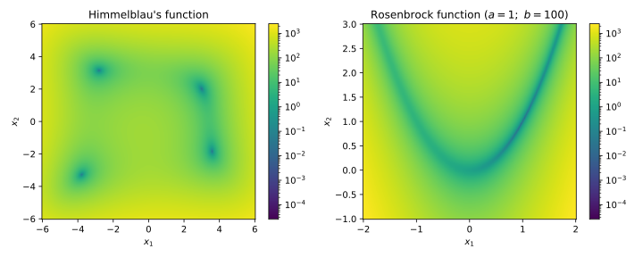
Steepest Descent
By noticing that the gradient of a function points to the direction of the steepest ascent, we can use the negative gradient to guide us toward the minimum. This method is called steepest descent or gradient descent.
Theoretical Background
Fixed Step Size
We can formalise the idea above into an algorithm:
- Choose a starting point and a step size .
- Calculate the gradient at the current point .
- Update the current point using .
- Repeat until the convergence criterion is met.
The step size , also known as the learning rate, determines how far we move in the direction of the negative gradient. Because the gradient vanishes at a stationary point, when this algorithm converges, it is guaranteed to converge to a stationary point. One should check afterwards whether the stationary point is a (local) minimum.
If we assume some desirable
properties for the objective function
Here, the objective function is assumed to be convex and has Lipschitz continuous gradient.
A function is called convex if and only if for all and all , where is the domain of .
The right-hand side of the inequality represents the straight line between and . In English, this inequality states that this straight line is always above the graph of .
The Lipschitz continuity of the gradient means that there exists a constant , called the Lipschitz constant, such that for all . This is a stronger condition than the continuity of the gradient.
Proof
We start by inserting into the quadradic upper bound of the objective function:
If we choose , then and we have by putting and identifying .
Because of the convexity of , we have
Therefore, we can further estimate using
Summing over all ’s on both sides, we obtain:
Because , is a decreasing sequence. Therefore, the sum on the left hand can be estimated by which leads to
This shows that for any , we can choose a large enough such that . Therefore, with the step size , steepest descent is guaranteed to converge to the minimum of the objective function. In the worst case, steepest descent converges sublinearly with the order for konvex functions.
even stronger properties for the objective function
Here, the objective function is assumed to be strongly convex and has Lipschitz continuous gradient.
A function is called strongly convex with parameter if and only if for all and all . This condition is just the convexity condition with an additional negative quadratic term on the right-hand side. In English, this inequality states that must be more convex than a quadratic function.
Proof
By inserting , we obtain
From the quadratic lower bound of the strongly convex function, we have Putting and , we obtain
Insert this inequality into the previous equation, we can write
For , we have shown for convex functions Because , we get which helps us to write the previous equation as Taking the square root on both sides, we get which shows that steepest descent converges linearly for strongly convex functions.
Variable Step Size
A very easy modification we can do to improve the performance of the steepest descent algorithm with fixed step size is to make variable. We can use the gradient to determine a direction and find a minimum in this direction. This is called a line search. Since we just want to obtain a reasonable step size, this line search does not have to be precise. This can be done by the so-called backtracking line search](https://en.wikipedia.org/wiki/Backtracking_line_search).
The Armijo variant of this method can be described as follows:
- Choose a starting point , a maximum step size , a descent direction and control parameters and .
- Calculate the directional derivative and the threshold . Note that it is assumed that leads to a local decrease in and hence .
- Check if the condition is satisfied. If yes, return . If not, set .
- Repeat until the condition above is satisfied.
Let us try to gain some intuition from this cryptic description. The right-hand side of the condition, , is the expected decrease in using linear approximation scaled by . So we start with a large step size and check if it leads to a sufficient decrease in . If not, we decrease the step and decrease it check again. In this way, we will rarely find the minimum in the search direction, but it is good enough because we do not use line search to find the minimum, but to find a reasonable step size for steepest descent.
Steepest descent with the backtracking line search can be summarised as follows:
- Choose a starting point and a maximum step size .
- Calculate the gradient at the current point .
- Use the gradient as the direction for the backtracking line search to find a step size .
- Update the current point using .
- Repeat until the convergence criterion is met.
Implementation
Because we aim to implement several optimization algorithms, we will
first implement a base class OptimiserBase which contains the common
methods and attributes of all optimization algorithms.
import numpy as np
from abc import ABC, abstractmethod
class OptimiserBase(ABC):
def __init__(self, func, p0, maxiter=200, **kwargs):
self.func = func
self.p = np.copy(p0)
self.p_new = np.copy(p0)
self.maxiter = maxiter
self.kwargs = kwargs
@abstractmethod
def next_step(self):
pass
@abstractmethod
def check_convergence(self):
pass
def _check_convergence_grad(self):
tol = self.kwargs.get('grad_tol', 1e-6)
grad_norm = np.linalg.norm(self.func(self.p, deriv=1))
return grad_norm < tol
def run(self, full_output=False):
converged = False
ps = [self.p]
for i in range(0, self.maxiter):
self.p_new = self.next_step()
ps.append(self.p_new)
converged = self.check_convergence()
if converged:
break
else:
self.p = np.copy(self.p_new)
if converged:
print(f'Optimisation converged in {i + 1} iterations!')
if not converged:
print('WARNING: Optimisation could not converge '
f'after {i + 1} iterations!')
if full_output:
info_dict = {
'niter': len(ps),
'p_opt': self.p_new,
'fval_opt': self.func(self.p_new, deriv=0),
'grad_opt': self.func(self.p_new, deriv=1),
'p_traj': np.array(ps),
}
return self.p_new, info_dict
else:
return self.p_new
This base class implements the _check_convergence_grad method, which
checks whether the gradient norm is smaller than a given tolerance. One could
implement other convergence criteria, e.g. absolute or relative change of the
iterate, absolute or relative change of the objective function value, etc.
This base class also implements
the run method which runs the optimization algorithm until convergence
or until a maximum number of iterations is reached. The run method calls
the next_step method to obtain the next iterate and the check_convergence
method to check whether the algorithm has converged. These two methods are
abstract methods which need to be implemented by subclasses.
With these boilerplate codes in place, we can concentrate on the important part: How to obtain the next iterate. For steepest descent with a fixed step size, it is very straightforward to implement.
class SimpleSteepestDescent(OptimiserBase):
def next_step(self):
alpha = self.kwargs.get('alpha', 0.01)
grad = self.func(self.p, deriv=1)
return self.p - alpha * grad
def check_convergence(self):
return self._check_convergence_grad()
For steepest descent with variable step size, we need to incorporate a line search, like the Armijo line search mentioned in the theory section.
def armijo_line_search(func, p0, vec, maxiter=100,
alpha0=1.0, c=0.5, tau=0.5):
m = np.dot(func(p0, deriv=1), vec)
t = -c * m
alpha = alpha0
for _ in range(0, maxiter):
if func(p0, deriv=0) - func(p0 + alpha * vec, deriv=0) > alpha * t:
break
else:
alpha *= tau
return alpha
Afterwards, we can implement the steepest descent with a variable step size by doing only minor modifications to the steepest descent algorithm with a fixed step size.
class SteepestDescent(OptimiserBase):
def next_step(self):
alpha0 = self.kwargs.get('alpha0', 1.0)
grad = self.func(self.p, deriv=1)
# alpha0 *= max(1.0, np.linalg.norm(grad))
alpha = armijo_line_search(
self.func, self.p, -grad, alpha0=alpha0,
)
return self.p - alpha * grad
def check_convergence(self):
return self._check_convergence_grad()
We can apply our implementation of the steepest descent algorithm to both of our test functions like this:
import numpy as np
import matplotlib.pyplot as plt
from matplotlib.colors import LogNorm
from objective_function import RosenbrockFunction, HimmelblauFunction, \
plot_2d_optimisation
from optimiser import SimpleSteepestDescent, BFGS
norm = LogNorm()
hf = HimmelblauFunction()
xs1 = np.linspace(-6.0, 6.0, 200)
ys1 = np.linspace(-6.0, 6.0, 200)
rf = RosenbrockFunction(args=(1.0, 100.0))
xs2 = np.linspace(-2.0, 2.0, 200)
ys2 = np.linspace(-1.0, 3.0, 200)
fig_sd, axs_sd = plt.subplots(1, 2, figsize=(10, 4))
p0 = [0.0, 0.0]
optimiser = SimpleSteepestDescent(hf, p0, maxiter=200,
alpha=0.01, grad_tol=1e-6)
popt, info = optimiser.run(full_output=True)
axs_sd[0].set_title(f'Converged after {info["niter"]} iterations')
plot_2d_optimisation(axs_sd[0], hf, xs1, ys1, norm=norm, traj=info['p_traj'])
p0 = [0.0, 0.0]
optimiser = SimpleSteepestDescent(rf, p0, maxiter=50000,
alpha=0.001, grad_tol=1e-6)
popt, info = optimiser.run(full_output=True)
axs_sd[1].set_title(f'Converged after {info["niter"]} iterations')
plot_2d_optimisation(axs_sd[1], rf, xs2, ys2, norm=norm, traj=info['p_traj'])
fig_sd.tight_layout()
plt.show()
If you play around with the step size, you may realize that the Rosenbrock
function requires a very small step size to converge, which leads to a very
slow convergence. Starting from , the optimization
trajectories for both functions are shown in the following figure.

(Quasi-)Newton Methods
The steepest descent method has a guaranteed linear convergence for strongly convex functions. In order to achieve quadratic convergence, we must get more information from the function. The most straightforward approach would be to take the second derivative, or the Hessian of the function. This is called Newton’s method in optimisation.
Theoretical Background
Newton’s Method
Just like the method carrying the same name for the root finding, which constructs a local linear approximation of the function, Newton’s method of optimisation constructs a local quadratic approximation and updates the current point to the minimum of the parabola. The corresponding algorithm would be:
- Choose a starting point .
- Obtain a quadratic approximation at the current point: .
- Update the current point using .
- Repeat until some convergence criteria are met.
For a problem with a handful of independent variables, the Hessian can be calculated and inverted without any problem. If we want to optimize a molecule with atoms, we have about degrees of freedom and the Hessian will have elements, which quickly becomes expensive to calculate and invert as grows. In this case, we can start with a guess for the initial Hessian, and use pieces of information along the iterations to update this Hessian. This leads to Quasi-Newton methods. One very widespread algorithm of this class is the Broyden-Fletcher-Goldfarb-Shanno algorithm, or the BFGS algorithm.
BFGS Algorithm
At first, we expand the function at iteration : where is the approximate Hessian at -th iteration.
Taking the gradient of the approximant, we get
Inserting , the condition approximately holds. After some rearrangement, the quasi-Newton condition imposed on the update of is with and .
To make the update of Hessian as simple as possible, we choose to add two rank-1 matrices at each step, i.e.
To ensure the Hessian is symmetric, and are chosen to be symmetric. The equation can thus be written as where denotes the dyadic product. By choosing and , and imposing the update condition secant for , we get and .
Finally, we arrive at a viable algorithm, which can be formulated as:
- Choose a starting point and a starting Hessian .
- Obtain a direction by solving.
- Perform a line search along to find an appropriate step size .
- Set and update .
- Calculate .
- Update the Hessian using .
- Repeat until the convergence criterion is met.
Although this method works, the determination of requires the inversion of , which could be quite expensive for larger Hessians. Fortunately, since the update rules for the Hessian is simple enough, we can invert the whole equation analytically with the help of the Sherman-Morrison-Woodbury formula, which results in with the approximately inverted Hessian .
The corresponding algorithm can be formulate as follows:
- Choose a starting point and a starting inverted Hessian .
- Obtain a direction by calculating .
- Perform a line search along to find an appropriate step size .
- Set and update .
- Calculate .
- Update the inverted Hessian using
- Repeat until the convergence criterion is met.
An easy and practical choice of the initial Hessian is the identity matrix, whose inversion is also an identity matrix.
Implementation
Even though the formulas for the BFGS algorithm look intimidating, the implementation is actually quite simple. We just have to pay attention not to mistype the very long formula for the update of the inverted Hessian and make sure to use the correct multiplication.
class BFGS(OptimiserBase):
def __init__(self, func, p0, maxiter=200, **kwargs):
super().__init__(func, p0, maxiter, **kwargs)
self.b_k = np.eye(len(p0))
def next_step(self):
alpha0 = self.kwargs.get('alpha0', 1.0)
grad = self.func(self.p, deriv=1)
v_k = -np.dot(self.b_k, grad)
alpha = armijo_line_search(
self.func, self.p, v_k, alpha0=alpha0,
)
s_k = alpha * v_k
y_k = self.func(self.p + s_k, deriv=1) - self.func(self.p, deriv=1)
self.b_k = self.b_k \
+ (np.dot(s_k, y_k) + np.linalg.multi_dot((y_k, self.b_k, y_k))) \
* np.outer(s_k, s_k) / np.dot(s_k, y_k)**2 \
- (np.outer(np.dot(self.b_k, y_k), s_k) \
+ np.outer(s_k, np.dot(y_k, self.b_k))) / np.dot(s_k, y_k)
return self.p + s_k
def check_convergence(self):
return self._check_convergence_grad()
We can apply our implementation of the BFGS algorithm to both of our test functions like this:
import numpy as np
import matplotlib.pyplot as plt
from matplotlib.colors import LogNorm
from objective_function import RosenbrockFunction, HimmelblauFunction, \
plot_2d_optimisation
from optimiser import SimpleSteepestDescent, BFGS
norm = LogNorm()
hf = HimmelblauFunction()
xs1 = np.linspace(-6.0, 6.0, 200)
ys1 = np.linspace(-6.0, 6.0, 200)
rf = RosenbrockFunction(args=(1.0, 100.0))
xs2 = np.linspace(-2.0, 2.0, 200)
ys2 = np.linspace(-1.0, 3.0, 200)
fig_bfgs, axs_bfgs = plt.subplots(1, 2, figsize=(10, 4))
p0 = [0.0, 0.0]
optimiser = BFGS(hf, p0, maxiter=200, alpha0=1.0, grad_tol=1e-6)
popt, info = optimiser.run(full_output=True)
axs_bfgs[0].set_title(f'Converged after {info["niter"]} iterations')
plot_2d_optimisation(axs_bfgs[0], hf, xs1, ys1, norm=norm, traj=info['p_traj'])
p0 = [0.0, 0.0]
optimiser = BFGS(rf, p0, maxiter=5000, alpha0=1.0, grad_tol=1e-6)
popt, info = optimiser.run(full_output=True)
axs_bfgs[1].set_title(f'Converged after {info["niter"]} iterations')
plot_2d_optimisation(axs_bfgs[1], rf, xs2, ys2, norm=norm, traj=info['p_traj'])
fig_bfgs.tight_layout()
plt.show()
You may understand now why the BFGS algorithm is so popular. Both functions could be optimized in a handful of iterations. Starting from , the optimization trajectories for both functions are shown in the following figure. 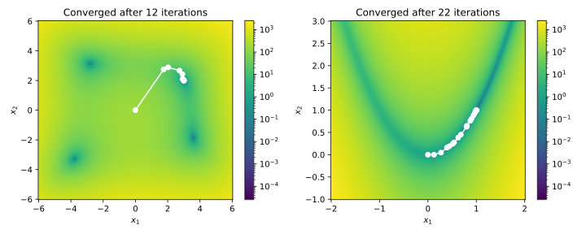
Desired Properties
Problem Set 0
Problem 1
We learned about two algorithms for floor division in the lecture. A regular division, however, does not only give us the quotient but also the remainder.
Modify the algorithms naive_div and div in chapter
1.5.2
to also return the remainder.
Problem 2
In the lecture, we have coloured the real spherical harmonics to make them look better. The colour can also be used to carry information. Every complex number can be written in polar form with the magnitude and phase . By only plotting the magnitude, the phase information is lost. In the lecture, we tried to mitigate this problem by using real spherical harmonics. These are, however, not eigenfunctions of the Schrödinger equation. The complex functions can be plotted without loss of information. A common practice is to plot the magnitude as usual and use colours to indicate the phase.
Write a programme to plot complex spherical harmonics with phases indicated by colours. Choose an appropriate colormap.
Hint: the functions abs and angle from NumPy could be helpful.
Problem 3
The notation stands for the expectation value of the operator when applied to the quantum state , i.e. The variance of an observable is defined as: where the index is omitted for notational simplicity. The standard deviation of the observable is then defined as
In the lecture, we generated the eigenstates of the quantum harmonic oscillator in the position basis, known as wavefunctions. In the position basis, the position and momentum operator is given as Calculate and for the first 5 eigenstates of the harmonic oscillator and verify Heisenberg’s uncertainty principle.
Hint: the imaginary unit in SymPy can be accessed using sp.I.
Problem 4
Recursion is a key concept in computer science where a problem is solved by breaking it down into smaller instances of the same problem. This is done by using functions that call themselves within their code. It is widely applicable to different types of problems.
The factorial function, for example, can be defined recursively in the following manner:
def factorial_recursive(n):
if n == 0:
return 1
else:
return n * factorial_recursive(n - 1)
For every recursive function, a termination condition is needed. Otherwise,
the function will go on until it is stopped by some safety mechanism or the
programme crashes. In this case, the recursion stops at n = 0 if only nonnegative
integers are used as the argument. If n is not zero, this function calls
itself with n decreased by 1, until the termination condition is met.
The same thing can also be accomplished with an iterative approach:
def factorial_iterative(n):
result = 1
for i in range(1, n + 1):
result *= i
return result
In this case, both implementations have similar code lengths. But often, a recursive approach can be easier to implement, e.g. the generation of Lucas numbers, which are closely related to the Fibonacci numbers.
The -th Lucas numbers is defined as
(a) Implement the function lucas_number(n) which takes one argument n
and generates the -th Lucas number recursively.
Although easy to implement, recursive algorithms often perform worse than
their iterative counterparts. This problem can sometimes be mitigated using
the lru_cache function decorator from the module functools. You can apply
this decorator like
from functools import lru_cache
@lru_cache(maxsize=4)
def lucas_number(n):
...
(b) Calculate using the undecorated as well as the decorated function, and pay attention to the execution time. Inform yourself about this decorator and explain how it was able to speed up your recursive function.
In the lecture, we generated the Hermite polynomials directly from their definition. Since they satisfy the recurrence relation with the initial conditions they can be generated recursively.
(c) Implement the function hermite_recursive(n) which takes one argument n
and symbolically generates the -th Hermite polynomial with the help
of SymPy in a recursive manner by using the recurrence relation above.
Problem Set 1
The Extended Hückel Theory (EHT) is a semi-empirical method first introduced by Roald Hoffmann in 19631 to obtain (very) approximative solutions to the Schrödinger equation and gain an understanding of electronic structures and properties. In this problem set, you will at first implement a modification of the original EHT with functions and classes defined in the lecture. Afterwards, you will extend EHT with a repulsive potential, which enables its ability to perform geometry optimization.
We will use a version of the VSTO-3G (Valence-only STO-3G) basis set parametrised for EHT with the aim of geometry optimization throughout this problem set. This basis is adapted from the STO exponents fitted by Dixon and Jurs2 and the GTO expansion coefficients found by Stewart3. You can download this basis set here.
Note: We could in principle also use the "ordinary" STO-3G basis, but the other parameters have to be adjusted.Problem 1
The only kind of molecular integral needed by EHT is the overlap integral, which makes this method extremely easy to implement. We shall perform an exemplary EHT calculation on water:
# Coordinates are in the unit of Angstrom.
o1 = Atom('O', [ 0.000, 0.000, 0.000], unit='A')
h1 = Atom('H', [ 1.000, 0.000, 0.000], unit='A')
h2 = Atom('H', [ 0.000, 1.000, 0.000], unit='A')
(a) Construct a water molecule as an instance of the class Molecule
using these 3 atoms given. Afterwards, calculate the overlap matrix using
the basis set provided above.
Expected result:
| 1.0000 | 0.0000 | 0.0000 | 0.0000 | 0.2152 | 0.2152 |
| 0.0000 | 1.0000 | 0.0000 | 0.0000 | 0.4014 | 0.0000 |
| 0.0000 | 0.0000 | 1.0000 | 0.0000 | 0.0000 | 0.4014 |
| 0.0000 | 0.0000 | 0.0000 | 1.0000 | 0.0000 | 0.0000 |
| 0.2152 | 0.4014 | 0.0000 | 0.0000 | 1.0000 | 0.1515 |
| 0.2152 | 0.0000 | 0.4014 | 0.0000 | 0.1515 | 1.0000 |
The Hamiltonian of our modified EHT is defined as where denotes the energy of the -th atomic orbital (AO) and AO-dependent parameters. This notation might be misleading. To find or , you should at first identify the element associated with the -th basis function and use or of that element according to the angular momentum of the -th basis function.
For H, C, N, and O, we shall use the following parameters:2,4
| H | C | N | O | |
|---|---|---|---|---|
| -13.6 | -21.4 | -26.0 | -32.3 | |
| -11.4 | -13.4 | -14.8 | ||
| 0.66836 | 0.88266 | 0.75747 | 0.84677 | |
| 0.58621 | 0.68272 | 0.76529 |
The AO energies are given in the unit of eV.
Because we only use valence orbitals,
Note on the original EHT
(b) Calculate the EHT Hamiltonian in the unit of Hartree for the water molecule constructed in (a) using the parameters given above.
Expected result:
| -1.1870 | 0.0000 | 0.0000 | 0.0000 | -0.2054 | -0.2054 |
| 0.0000 | -0.5439 | 0.0000 | 0.0000 | -0.2143 | 0.0000 |
| 0.0000 | 0.0000 | -0.5439 | 0.0000 | 0.0000 | -0.2143 |
| 0.0000 | 0.0000 | 0.0000 | -0.5439 | 0.0000 | 0.0000 |
| -0.2054 | -0.2143 | 0.0000 | 0.0000 | -0.4998 | -0.0676 |
| -0.2054 | 0.0000 | -0.2143 | 0.0000 | -0.0676 | -0.4998 |
The energies of molecular orbitals (MOs) are obtained as solutions of the secular equation with the Hamiltonian defined in (1). Note that for this specific equation, the approximation of unit overlap, i.e. , was applied. The orbital energies can thus be calculated as eigenvalues of , while the eigenvectors are the expansion coefficients of the MOs in the basis of AOs (MO coefficients).
(c) Calculate the MO energies in the unit of Hartree using the Hamiltonian obtained in (b) while neglecting the differential overlap.
Hint: The NumPy function
np.linalg.eigh
could be helpful.
Expected result:
| 1 | 2 | 3 | 4 | 5 | 6 | |
| -1.3105 | -0.7095 | -0.6964 | -0.5439 | -0.2913 | -0.2665 |
(The indices are 1-based.)
The total electronic energy of the molecule is simply the sum of the energies of all occupied (spatial) MOs multiplied by 2, assuming the ’s are in ascending order, i.e. where stands for the number of occupied (spatial) MOs.
(d) Calculate the total energy of the water molecule constructed in (a) using the orbital energies obtained in (c).
Expected result:
R. Hoffmann, J. Chem. Phys., 1963, 39, 1397–1412.
S. L. Dixon, P. C. Jurs, J. Comput. Chem., 1993, 15, 733–746.
R. F. Stewart, J. Chem. Phys., 1970, 52, 431–438.
A. B. Anderson, R. Hoffmann, J. Chem. Phys., 1974, 60, 4271–4273.
R. S. Mulliken, J. Chim. Phys., 1949, 46, 497–542.
M. A. X. Wolfsberg, L. Helmholz, J. Chem. Phys., 1952, 20, 837–843.
Problem 2
You can download the latest versions of the Atom, Molecule, Gaussian,
and BasisSet classes from chapter 3.0.
A kinetic energy integral between two centres and is defined as
By expanding the Laplacian, we obtain where with and is the overlap integral between the two basis functions and centered at and , respectively, with and denoting their angular momenta.
(a) Show (by hand) that the 1-dimensional kinetic energy integral can be written as a linear combination of up to 3 overlap integrals like
(b) Generate symbolic expressions for the 1-dimensional kinetic energy
integrals for and orbitals using SymPy.
Wrap the expressions into a function called t_ij and write it into a Python file called T.py, just like we did for the overlap integrals in the
lecture.
Hint: for or .
(c) Extend the Gaussian class with the method T to calculate the
kinetic energy integrals between two Gaussian basis functions. Also,
extend the Molecule class with the method get_T to calculate the
kinetic energy matrix.
We now take a look again at the water molecule from the last problem set:
# Coordinates are in the unit of Angstrom.
o1 = Atom('O', [ 0.000, 0.000, 0.000], unit='A')
h1 = Atom('H', [ 1.000, 0.000, 0.000], unit='A')
h2 = Atom('H', [ 0.000, 1.000, 0.000], unit='A')
(d) Calculate the kinetic energy matrix for this water molecule using the standard STO-3G basis set.
Expected result:
| 29.0032 | -0.1680 | 0.0000 | 0.0000 | 0.0000 | -0.0051 | -0.0051 |
| -0.1680 | 0.8081 | 0.0000 | 0.0000 | 0.0000 | 0.1090 | 0.1090 |
| 0.0000 | 0.0000 | 2.5287 | 0.0000 | 0.0000 | 0.2524 | 0.0000 |
| 0.0000 | 0.0000 | 0.0000 | 2.5287 | 0.0000 | 0.0000 | 0.2524 |
| 0.0000 | 0.0000 | 0.0000 | 0.0000 | 2.5287 | 0.0000 | 0.0000 |
| -0.0051 | 0.1090 | 0.2524 | 0.0000 | 0.0000 | 0.7600 | 0.0181 |
| -0.0051 | 0.1090 | 0.0000 | 0.2524 | 0.0000 | 0.0181 | 0.7600 |
Solution to Problem Set 0
Problem 1
Modify the algorithms naive_div and div in chapter
1.5.2
to also return the remainder.
For naive_div, the remainder is given by a + b after the execution of
the division:
def naive_div(a, b):
r = -1
while a >= 0:
a -= b
r += 1
return r, a + b
For div, the remainder is just a:
def div(a, b):
n = a.bit_length()
tmp = b << n
r = 0
for _ in range(0, n + 1):
r <<= 1
if tmp <= a:
a -= tmp
r += 1
tmp >>= 1
return r, a
Problem 2
Write a programme to plot complex spherical harmonics with phases indicated by colours. Choose an appropriate colormap.
Just like in the lecture, we import the necessary libraries
from sympy.functions.special.spherical_harmonics import Ynm
import sympy as sp
import numpy as np
import matplotlib.pyplot as plt
from matplotlib import cm
and define the symbols, as well as the spherical harmonic as a Python function:
l, m, theta, phi = sp.symbols("l m theta phi")
Ylm_sym = Ynm(l, m, theta, phi).expand(func=True)
Ylm = sp.lambdify((l, m, theta, phi), Ylm_sym)
Afterwards, we create the angular grid
N = 1000
theta = np.linspace(0, np.pi, N)
phi = np.linspace(0, 2*np.pi, N)
theta, phi = np.meshgrid(theta, phi)
and convert it into Cartesian coordinates:
l = 3
m = 1
Ylm_num = Ylm(l, m, theta, phi)
r = np.abs(Ylm_num)
x = r * np.cos(phi) * np.sin(theta)
y = r * np.sin(phi) * np.sin(theta)
z = r * np.cos(theta)
Note that the complex spherical harmonics are asked here, we should not add
the complex conjugate but instead only use Ylm itself. The distance r is
obtained directly by taking the absolute value of the complex function values
of Ylm.
The phases can be calculated using the NumPy function angle.
Since colourmaps from Matplotlib take a number between 0 and 1 to output
a colour, we should normalise the phases. Because np.angle produces values
from to , we divide the phases by to bring
the range to -0.5 – 0.5 and add 0.5 to get the desired interval.
These numbers can then be fed to the colourmap function. The produced colours
are parsed to the optional argument facecolors of the function
plot_surface.
fig = plt.figure(figsize=(10, 10))
ax = fig.add_subplot(111, projection="3d")
colors = np.angle(Ylm_num)/(2.0*np.pi) + 0.5
ax.plot_surface(x, y, z, facecolors=cm.hsv(colors))
ax.set_xlim([-0.5, 0.5])
ax.set_ylim([-0.5, 0.5])
ax.set_zlim([-0.5, 0.5])
plt.show()
Because the phase is cyclic, i.e. a phase of equals a phase
of , a cyclic colourmap should be chosen to reflect this. In
Matplotlib 3.8, three cyclic colourmaps are available, twilight,
twilight_shifted, and hsv. We have used hsv in this example.
The following figure is obtained for l = 3 and m = 1:

Problem 3
Calculate and for the first 5 eigenstates of the harmonic oscillator and verify Heisenberg’s uncertainty principle.
Just like in the lecture, we first define the wavefunction after importing the necessary libraries:
import sympy as sp
from IPython.display import display
x, z = sp.symbols('x z')
m = sp.Symbol('m', positive=True)
omega = sp.Symbol('omega', positive=True)
n = sp.Symbol('n', integer=True, nonnegative=True)
def wfn(n):
nf = (1/sp.sqrt(2**n * sp.factorial(n))) \
* ((m*omega)/sp.pi)**sp.Rational(1, 4)
expf = sp.exp(-(m*omega*x**2)/2)
hp = hermite_direct(n).subs(z, sp.sqrt(m*omega)*x)
psi_n = sp.simplify(nf * expf * hp)
return psi_n
Since we are going to do lots of integrations, it is worth defining a function to do it:
def integrate(expr):
return sp.integrate(expr, (x, -sp.oo, sp.oo))
By using the definition for and , we can construct a function for each operator to calculate its standard deviation given a wavefunction:
def get_sigma_x(psi):
x_mean = integrate(sp.conjugate(psi) * x * psi)
x_mean = sp.simplify(x_mean)
x_rms = integrate(sp.conjugate(psi) * x**2 * psi)
x_rms = sp.simplify(x_rms)
var_x = x_rms - x_mean**2
sigma_x = sp.sqrt(var_x)
return sigma_x, x_mean, x_rms
def get_sigma_p(psi):
p_mean = integrate(sp.conjugate(psi) * (-sp.I) * sp.diff(psi, x))
p_mean = sp.simplify(p_mean)
p_rms = integrate(sp.conjugate(psi) * (-sp.I)**2 * sp.diff(psi, x, x))
p_rms = sp.simplify(p_rms)
var_p = p_rms - p_mean**2
sigma_p = sp.sqrt(var_p)
return sigma_p, p_mean, p_rms
These two functions can then be used to calculate and for the first 5 eigenfunctions. By calculating their product, we can verify that they fulfill Heisenberg’s uncertainty principle.
sp.init_printing()
for i in range(0, 5):
psi = wfn(i)
sigma_x, x_mean, x_rms = get_sigma_x(psi)
sigma_p, p_mean, p_rms = get_sigma_p(psi)
product = sp.simplify(sigma_x * sigma_p)
display((i, (x_mean, x_rms, p_mean, p_rms), (sigma_x, sigma_p), product))
Problem 4
(a) Implement the function lucas_number(n) which takes one argument n
and generates the -th Lucas number recursively.
The function follows directly from the definition of the Lucas numbers:
def lucas_number(n):
if n == 0:
return 2
elif n == 1:
return 1
else:
return lucas_number(n - 1) + lucas_number(n - 2)
(b) Calculate using the undecorated as well as the decorated function, and pay attention to the execution time. Inform yourself about this decorator and explain how it was able to speed up your recursive function.
For the speed comparison, we define the cached version of lucas_number:
from functools import lru_cache
@lru_cache(maxsize=4)
def lucas_number_cache(n):
if n == 0:
return 2
elif n == 1:
return 1
else:
return lucas_number_cache(n - 1) + lucas_number_cache(n - 2)
Here, just an estimation suffices to compare the performance of both
functions. While lucas_number takes several seconds to complete,
lucas_number_cache finishes in the blink of an eye. Of course, you can
obtain a more precise result by utilizing the time.time() or
time.perf_counter() function from the time module. If you work with
IPython (e.g. Jupyter Notebook), you can also use the
magic commands
%time, %%time, or %timeit.
The lru_cache (least recently used cache) decorator is a built-in
function in Python’s functools module that provides a memoization
mechanism for functions. Memoization is a technique used to cache the
results of function calls and avoid redundant computations by storing
the results for specific inputs.
When applied to the lucas_number function, the lru_cache decorator
stores the results of function calls in a cache, allowing subsequent calls
with the same arguments to retrieve the result from the cache instead of
recomputing it. This significantly improves the performance of the function,
especially for larger values of n, where there would be many repeated
computations without memoization.
Here’s how the lru_cache decorator enhances the lucas_number function:
-
The first time
lucas_numberis called with a specific argumentn, the decorator executes the function body and stores the result in a cache. -
If
lucas_numberis called again with the same argumentn, instead of executing the function body, the decorator checks the cache. If the result fornis present in the cache, it returns the cached result directly without further computation.
By avoiding redundant recursive function calls and reusing previously
computed results, the lru_cache decorator significantly reduces the number
of function evaluations needed to compute the Lucas number for a given n.
This caching mechanism provides a considerable speed boost, especially when
dealing with larger values of n or when there are overlapping subproblems
in the recursive calls.
Note that when using lru_cache, note that the cache size is limited. If the
cache becomes full, the least recently used results will be discarded to
make room for new entries, therefore the name “least recently used” cache.
You can make the cache size unlimited by supplying maxsize=None, or,
with Python >= 3.9, using @cache instead of @lru_cache to cache
everything without a size limit.
(c) Implement the function hermite_recursive(n) which takes one argument n
and symbolically generates the -th Hermite polynomial with the help
of SymPy in a recursive manner by using the recurrence relation above.
By following the recursion relation, it is straightforward to define the function we seek for:
import sympy as sp
def hermite_recursive(n, z):
if n == 0:
return sp.sympify(1)
elif n == 1:
return sp.sympify(2) * z
else:
return sp.simplify(
2 * z * hermite_recursive(n - 1, z) \
- 2 * (n - 1) * hermite_recursive(n - 2, z)
)
Just remember to shift all indices by 1, since the recursion relation
given is defined for , , and , while in programming,
n, n - 1, and n - 2 are needed.